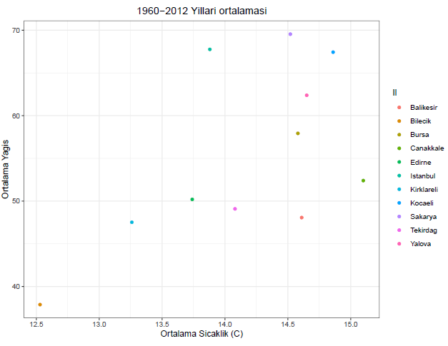
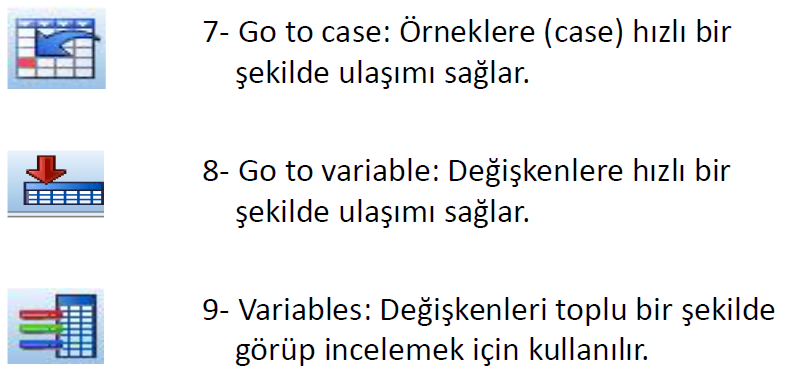
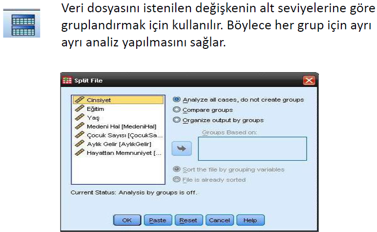
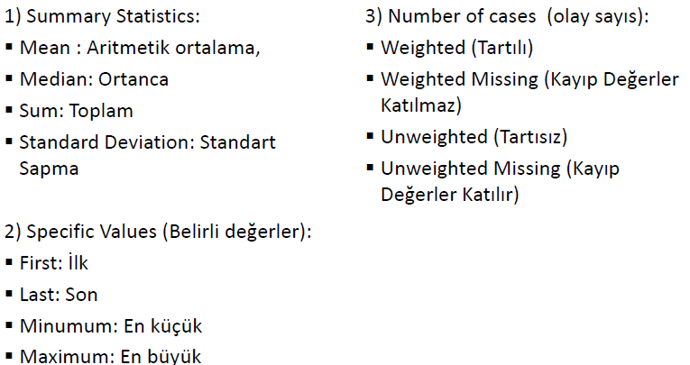
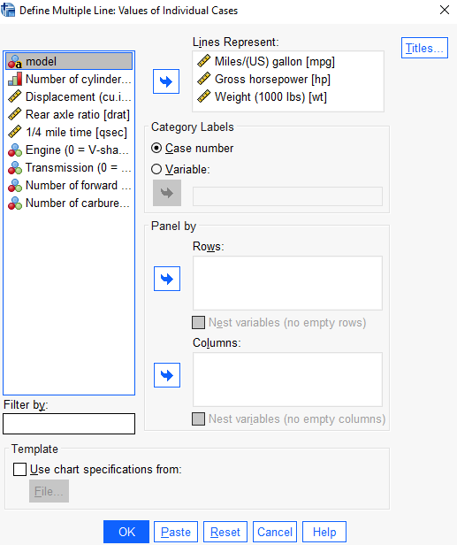

<!DOCTYPE html>
<html xmlns="http://www.w3.org/1999/xhtml" lang="en" xml:lang="en"><head>

<meta charset="utf-8">
<meta name="generator" content="quarto-1.5.57">

<meta name="viewport" content="width=device-width, initial-scale=1.0, user-scalable=yes">


<title>HAFTA 7 - SPSS PAKET PROGRAMI İLE TEMEL İSTATİSTİK – FEF1002 Introduction to Basic Computer Technologies</title>
<style>
code{white-space: pre-wrap;}
span.smallcaps{font-variant: small-caps;}
div.columns{display: flex; gap: min(4vw, 1.5em);}
div.column{flex: auto; overflow-x: auto;}
div.hanging-indent{margin-left: 1.5em; text-indent: -1.5em;}
ul.task-list{list-style: none;}
ul.task-list li input[type="checkbox"] {
  width: 0.8em;
  margin: 0 0.8em 0.2em -1em; /* quarto-specific, see https://github.com/quarto-dev/quarto-cli/issues/4556 */ 
  vertical-align: middle;
}
</style>


<script src="site_libs/quarto-nav/quarto-nav.js"></script>
<script src="site_libs/quarto-nav/headroom.min.js"></script>
<script src="site_libs/clipboard/clipboard.min.js"></script>
<script src="site_libs/quarto-search/autocomplete.umd.js"></script>
<script src="site_libs/quarto-search/fuse.min.js"></script>
<script src="site_libs/quarto-search/quarto-search.js"></script>
<meta name="quarto:offset" content="./">
<script src="site_libs/quarto-html/quarto.js"></script>
<script src="site_libs/quarto-html/popper.min.js"></script>
<script src="site_libs/quarto-html/tippy.umd.min.js"></script>
<script src="site_libs/quarto-html/anchor.min.js"></script>
<link href="site_libs/quarto-html/tippy.css" rel="stylesheet">
<link href="site_libs/quarto-html/quarto-syntax-highlighting.css" rel="stylesheet" id="quarto-text-highlighting-styles">
<script src="site_libs/bootstrap/bootstrap.min.js"></script>
<link href="site_libs/bootstrap/bootstrap-icons.css" rel="stylesheet">
<link href="site_libs/bootstrap/bootstrap.min.css" rel="stylesheet" id="quarto-bootstrap" data-mode="light">
<script id="quarto-search-options" type="application/json">{
  "location": "navbar",
  "copy-button": false,
  "collapse-after": 3,
  "panel-placement": "end",
  "type": "overlay",
  "limit": 50,
  "keyboard-shortcut": [
    "f",
    "/",
    "s"
  ],
  "show-item-context": false,
  "language": {
    "search-no-results-text": "No results",
    "search-matching-documents-text": "matching documents",
    "search-copy-link-title": "Copy link to search",
    "search-hide-matches-text": "Hide additional matches",
    "search-more-match-text": "more match in this document",
    "search-more-matches-text": "more matches in this document",
    "search-clear-button-title": "Clear",
    "search-text-placeholder": "",
    "search-detached-cancel-button-title": "Cancel",
    "search-submit-button-title": "Submit",
    "search-label": "Search"
  }
}</script>

  <script src="https://cdnjs.cloudflare.com/polyfill/v3/polyfill.min.js?features=es6"></script>
  <script src="https://cdn.jsdelivr.net/npm/mathjax@3/es5/tex-chtml-full.js" type="text/javascript"></script>

<script type="text/javascript">
const typesetMath = (el) => {
  if (window.MathJax) {
    // MathJax Typeset
    window.MathJax.typeset([el]);
  } else if (window.katex) {
    // KaTeX Render
    var mathElements = el.getElementsByClassName("math");
    var macros = [];
    for (var i = 0; i < mathElements.length; i++) {
      var texText = mathElements[i].firstChild;
      if (mathElements[i].tagName == "SPAN") {
        window.katex.render(texText.data, mathElements[i], {
          displayMode: mathElements[i].classList.contains('display'),
          throwOnError: false,
          macros: macros,
          fleqn: false
        });
      }
    }
  }
}
window.Quarto = {
  typesetMath
};
</script>

</head>

<body class="nav-fixed">

<div id="quarto-search-results"></div>
  <header id="quarto-header" class="headroom fixed-top">
    <nav class="navbar navbar-expand-lg " data-bs-theme="dark">
      <div class="navbar-container container-fluid">
      <div class="navbar-brand-container mx-auto">
    <a class="navbar-brand" href="./index.html">
    <span class="navbar-title">FEF1002 Introduction to Basic Computer Technologies</span>
    </a>
  </div>
            <div id="quarto-search" class="" title="Search"></div>
          <button class="navbar-toggler" type="button" data-bs-toggle="collapse" data-bs-target="#navbarCollapse" aria-controls="navbarCollapse" role="menu" aria-expanded="false" aria-label="Toggle navigation" onclick="if (window.quartoToggleHeadroom) { window.quartoToggleHeadroom(); }">
  <span class="navbar-toggler-icon"></span>
</button>
          <div class="collapse navbar-collapse" id="navbarCollapse">
            <ul class="navbar-nav navbar-nav-scroll me-auto">
  <li class="nav-item">
    <a class="nav-link" href="./index.html"> 
<span class="menu-text">Main</span></a>
  </li>  
  <li class="nav-item">
    <a class="nav-link" href="./about.html"> 
<span class="menu-text">About</span></a>
  </li>  
</ul>
          </div> <!-- /navcollapse -->
            <div class="quarto-navbar-tools">
</div>
      </div> <!-- /container-fluid -->
    </nav>
</header>
<!-- content -->
<div id="quarto-content" class="quarto-container page-columns page-rows-contents page-layout-article page-navbar">
<!-- sidebar -->
<!-- margin-sidebar -->
    <div id="quarto-margin-sidebar" class="sidebar margin-sidebar">
        <nav id="TOC" role="doc-toc" class="toc-active">
    <h2 id="toc-title">On this page</h2>
   
  <ul>
  <li><a href="#temel-kavramlar" id="toc-temel-kavramlar" class="nav-link active" data-scroll-target="#temel-kavramlar">TEMEL KAVRAMLAR</a>
  <ul class="collapse">
  <li><a href="#anakütle---popülasyon---kitle---evren" id="toc-anakütle---popülasyon---kitle---evren" class="nav-link" data-scroll-target="#anakütle---popülasyon---kitle---evren">Anakütle - Popülasyon - Kitle - Evren</a></li>
  <li><a href="#değişken-ölçüm-düzeyleri" id="toc-değişken-ölçüm-düzeyleri" class="nav-link" data-scroll-target="#değişken-ölçüm-düzeyleri"><strong>Değişken Ölçüm Düzeyleri</strong></a></li>
  </ul></li>
  <li><a href="#verilerin-spss-programı-için-işlenmesi" id="toc-verilerin-spss-programı-için-işlenmesi" class="nav-link" data-scroll-target="#verilerin-spss-programı-için-işlenmesi">Verilerin SPSS Programı İçin İşlenmesi</a>
  <ul class="collapse">
  <li><a href="#verilerin-sunulması-grafikler" id="toc-verilerin-sunulması-grafikler" class="nav-link" data-scroll-target="#verilerin-sunulması-grafikler">Verilerin Sunulması (Grafikler)</a></li>
  <li><a href="#spss-paket-programı-nedir" id="toc-spss-paket-programı-nedir" class="nav-link" data-scroll-target="#spss-paket-programı-nedir">SPSS Paket Programı Nedir ?</a></li>
  <li><a href="#spss-kurulumu" id="toc-spss-kurulumu" class="nav-link" data-scroll-target="#spss-kurulumu">SPSS Kurulumu</a></li>
  <li><a href="#spss-kurulumu-1" id="toc-spss-kurulumu-1" class="nav-link" data-scroll-target="#spss-kurulumu-1">SPSS Kurulumu</a></li>
  </ul></li>
  <li><a href="#spsse-giriş-ve-tanımlamalar" id="toc-spsse-giriş-ve-tanımlamalar" class="nav-link" data-scroll-target="#spsse-giriş-ve-tanımlamalar">SPSS’e Giriş ve Tanımlamalar</a>
  <ul class="collapse">
  <li><a href="#spss-ana-ekran" id="toc-spss-ana-ekran" class="nav-link" data-scroll-target="#spss-ana-ekran">SPSS Ana ekran</a></li>
  <li><a href="#syntax-editor-sözdizimi-düzenleyicisi" id="toc-syntax-editor-sözdizimi-düzenleyicisi" class="nav-link" data-scroll-target="#syntax-editor-sözdizimi-düzenleyicisi">Syntax Editor (Sözdizimi Düzenleyicisi)</a></li>
  <li><a href="#viewer-output-window-çıktı-penceresi" id="toc-viewer-output-window-çıktı-penceresi" class="nav-link" data-scroll-target="#viewer-output-window-çıktı-penceresi">Viewer (Output) Window (Çıktı Penceresi)</a></li>
  <li><a href="#variable-view-tanımlamaları" id="toc-variable-view-tanımlamaları" class="nav-link" data-scroll-target="#variable-view-tanımlamaları">Variable View Tanımlamaları</a></li>
  <li><a href="#excel-spss-arası-veri-aktarma" id="toc-excel-spss-arası-veri-aktarma" class="nav-link" data-scroll-target="#excel-spss-arası-veri-aktarma">Excel – SPSS Arası Veri Aktarma</a></li>
  <li><a href="#değişken-kategorilerini-tanımlama" id="toc-değişken-kategorilerini-tanımlama" class="nav-link" data-scroll-target="#değişken-kategorilerini-tanımlama">Değişken Kategorilerini Tanımlama</a></li>
  </ul></li>
  <li><a href="#spss-menüleri" id="toc-spss-menüleri" class="nav-link" data-scroll-target="#spss-menüleri">SPSS MENÜLERİ</a>
  <ul class="collapse">
  <li><a href="#file-menüsü" id="toc-file-menüsü" class="nav-link" data-scroll-target="#file-menüsü">FILE MENÜSÜ</a></li>
  <li><a href="#hizli-menüler" id="toc-hizli-menüler" class="nav-link" data-scroll-target="#hizli-menüler">HIZLI MENÜLER</a></li>
  </ul></li>
  <li><a href="#edit-menüsü" id="toc-edit-menüsü" class="nav-link" data-scroll-target="#edit-menüsü">EDIT MENÜSÜ</a></li>
  <li><a href="#view-menüsü" id="toc-view-menüsü" class="nav-link" data-scroll-target="#view-menüsü">VIEW MENÜSÜ</a></li>
  <li><a href="#data-menüsü" id="toc-data-menüsü" class="nav-link" data-scroll-target="#data-menüsü">DATA MENÜSÜ</a></li>
  <li><a href="#transform-menüsü" id="toc-transform-menüsü" class="nav-link" data-scroll-target="#transform-menüsü">TRANSFORM MENÜSÜ</a></li>
  <li><a href="#analyze-menüsü" id="toc-analyze-menüsü" class="nav-link" data-scroll-target="#analyze-menüsü">ANALYZE MENÜSÜ</a></li>
  <li><a href="#utilities-menüsü" id="toc-utilities-menüsü" class="nav-link" data-scroll-target="#utilities-menüsü">UTILITIES MENÜSÜ</a></li>
  <li><a href="#windows-menüsü" id="toc-windows-menüsü" class="nav-link" data-scroll-target="#windows-menüsü">WINDOWS MENÜSÜ</a></li>
  <li><a href="#helps-menüsü" id="toc-helps-menüsü" class="nav-link" data-scroll-target="#helps-menüsü">HELPS MENÜSÜ</a></li>
  <li><a href="#spss-kullanarak-grafik-çizimi" id="toc-spss-kullanarak-grafik-çizimi" class="nav-link" data-scroll-target="#spss-kullanarak-grafik-çizimi">SPSS KULLANARAK GRAFİK ÇİZİMİ</a>
  <ul class="collapse">
  <li><a href="#histogram-grafiği-çizimi" id="toc-histogram-grafiği-çizimi" class="nav-link" data-scroll-target="#histogram-grafiği-çizimi">HISTOGRAM GRAFİĞİ ÇİZİMİ</a></li>
  <li><a href="#çizgi-grafiği-çizimi" id="toc-çizgi-grafiği-çizimi" class="nav-link" data-scroll-target="#çizgi-grafiği-çizimi">ÇİZGİ GRAFİĞİ ÇİZİMİ</a>
  <ul class="collapse">
  <li><a href="#çoklu-çizgi-grafiği" id="toc-çoklu-çizgi-grafiği" class="nav-link" data-scroll-target="#çoklu-çizgi-grafiği">Çoklu Çizgi Grafiği</a></li>
  </ul></li>
  <li><a href="#pie-grafiği-çizimi" id="toc-pie-grafiği-çizimi" class="nav-link" data-scroll-target="#pie-grafiği-çizimi">PIE GRAFİĞİ ÇİZİMİ</a></li>
  <li><a href="#boxplot-grafiği-çizimi" id="toc-boxplot-grafiği-çizimi" class="nav-link" data-scroll-target="#boxplot-grafiği-çizimi">BOXPLOT GRAFİĞİ ÇİZİMİ</a></li>
  <li><a href="#scatter-grafiği-çizimi" id="toc-scatter-grafiği-çizimi" class="nav-link" data-scroll-target="#scatter-grafiği-çizimi">SCATTER GRAFİĞİ ÇİZİMİ</a></li>
  </ul></li>
  </ul>
</nav>
    </div>
<!-- main -->
<main class="content" id="quarto-document-content">

<header id="title-block-header" class="quarto-title-block default">
<div class="quarto-title">
<h1 class="title">HAFTA 7 - SPSS PAKET PROGRAMI İLE TEMEL İSTATİSTİK</h1>
</div>


<div class="quarto-title-meta">

    
  
    
  </div>
  


</header>


<p>Bu haftada yer alan ders içeriği ana konuları aşağıdaki gibidir.</p>
<ul>
<li>
Analizler için gerekli temel istatistik kavramlara giriş
</li>
<li>
SPSS programının tanıtımı
</li>
<li>
SPSS programına giriş
</li>
</ul>
<section id="temel-kavramlar" class="level2">
<h2 class="anchored" data-anchor-id="temel-kavramlar">TEMEL KAVRAMLAR</h2>
<section id="anakütle---popülasyon---kitle---evren" class="level3">
<h3 class="anchored" data-anchor-id="anakütle---popülasyon---kitle---evren">Anakütle - Popülasyon - Kitle - Evren</h3>
<p><strong>Anakütle</strong>: Hakkında bilgi edinilmek istenen ve biçimsel homojenliğe sahip (belirli bir tanıma uyan) birimlerin oluşturduğu topluluğa denir.</p>
<ul>
<li>Anakütleyi, bir çalışmayla ilgili verilerin ve ya ölçme sonuçlarının tümünün oluşturduğu küme olarak tanımlayabiliriz.
<ul>
<li>2019 yılında LGS’ye giren 1.2 milyon öğrencinin puanları LGS Puanları için evrendir.</li>
<li>Aralık 2019 izleme sınavını tüm ildeki 5. sınıf öğrencilere uygulanması, o il için izleme sınav puanının evrenidir.</li>
</ul></li>
</ul>
<p><strong>Örneklem</strong>: Bir anakütleden, ana kütlenin özelliklerini belirlemek için seçilen birimlerden oluşan bir anakütle parçasına örneklem denir. Bir diğer ifadeyle vreni temsil edecek şekilde uygun yöntemlerle seçilen ve daha az sayıdaki elemandan oluşturulan kümeye örneklem adı verilir.</p>
<ul>
<li>Maliyetten, zamandan veya işgücünden tasarruf için örneklem kullanılır.
<ul>
<li>2019 yılında LGS’ye giren 1.2 milyon öğrenciden uygun yöntemle seçilen 2000 öğrencinin LGS puanı LGS puanları için örneklemdir</li>
<li>Aralık 2019 izleme sınavını tüm ildeki 5. sınıf öğrencilerinde uygun yöntemle seçilen 3.000 öğrenciye uygulanması, o il için izleme sınav puanının örneklemidir..</li>
</ul></li>
</ul>
<div class="quarto-figure quarto-figure-center">
<figure class="figure">
<p></p>
<figcaption>image.png</figcaption>
</figure>
</div>
<p><strong>Birim</strong>: Anakütle ya da örneklemi oluşturan ve gözlem konusu olarak alınan her bir kollektif olaya birim denir.</p>
<ul>
<li>Örneklemi oluşturmak için seçilen her bir birim ayrıca gözlem olarak da ifade edilebilir.</li>
</ul>
<p><strong>Örnek</strong></p>
<p>Seçim döneminde, * 18 yaşından büyük oy verme hakkına sahip her birey anakütleyi. * Araştırma şirketlerinin seçim anketini uyguladıkları bireyler bir örneklemi * Oy verme hakkına sahip her bir kişi bir bireyi gösterir.</p>
<p><strong>Veri</strong></p>
<ul>
<li>Belirli amaçlarla toplanan benzer sayılara veri denir.</li>
<li>Gözlemler sonucunda elde edilen sayısal bilgilere veri denir.</li>
<li>Bir sonuca varabilmek için gerekli olan ilk bilgi de veridir.</li>
<li>Anlam çıkartmak ya da sonuca varmak için kullanılan nicelik, olay ve kayıtlara denir.</li>
</ul>
<p><strong>Örnek</strong> (Öğrenci - Veri)</p>
<p>Bir sınıftaki öğrencilerin, yaşı, cinsiyeti, göz rengi, boyu, kilosu bir veriyi oluşturur.</p>
<p><strong>Değişken</strong></p>
<ul>
<li>Birimin sahip olduğu ve diğer birimlerden ayırt edilmesini sağlayan özelliklere değişken denir.</li>
<li>Bir ya da birden fazla değişkenler verileri oluşturur.</li>
</ul>
<p><strong>Örnek</strong> (Öğrenci - Veri)</p>
<p>Yukarıdaki veriye ait her bir özelliğe değişken denir. Yani yaş, cinsiyet, göz rengi, boy ve kilonun her biri bir değişkendir.</p>
<p><strong>Şık</strong></p>
<ul>
<li>Değişkenlerin alabileceği değerlere şık denir.</li>
</ul>
<p><strong>Örnek</strong> (Öğrenci - Veri)</p>
<p>Yukarıdaki örnekte, Cinsiyet değişkeninin alabileceği “Erkek” ve “Kadın” değerleri değişkenin şıklarıdır.</p>
<p><strong>Değişken Tanımlamaları ve Türleri</strong></p>
<ul>
<li><p>Şıkları sayılarla ifade edilebilen değişkenlere <strong>nicel (kantitatif) değişken</strong>, kelimelerle ifade edilen değişkenlere <strong>nitel (kalitatif - kategorik) değişken</strong> denir.<br></p>
<p><strong>Örnekler - Nicel (kantitatif) değişken</strong></p>
<ul>
<li>Akademik Başarı puanı</li>
<li>Ağırlık ölçüsü</li>
<li>Tutum Puanı</li>
<li>Bir ailenin sahip olduğu çocuk sayısı</li>
<li>Kitap sayısı</li>
<li>Gelir miktarı miktarı miktarı<br> <strong>Örnekler - Nitel (kalitatif) değişken</strong><br></li>
<li>Cinsiyet</li>
<li>Yerleşim birimi</li>
<li>Öğrenim görülen bölüm</li>
</ul></li>
<li><p>Kantitatif değişkenlerin şıkları eğer tamsayılarla ifade edilebiliyorsa <strong>kesikli değişken</strong>, ondalık sayılarla ifade edilebiliyorsa <b>sürekli değişken</b> adını alır.r.</p></li>
<li><p><strong>Bağımsız değişken</strong>: Başka bir değişkene bağlı olmadan değerler alabilen değişkendir.</p></li>
<li><p><strong>Bağımlı değişken</strong> : Başka bir değişkene bağlı olarak değerler olabilen değişkendir.<br> Bağımlı ve bağımsız değişken sınıflandırması, gerçekte farklı değişken türlerinin ayrımından ziyade, bir araştırmada değişkenlerin nasıl kullanıldığıyla ilişkilidir.<br> Kısaca, araştırmada değişkenliği araştırılan ve sonuç olan bağımlı değişken; sonucu etkileyen veya etkileyecek olan bağımsı değişkendir.</p></li>
</ul>
<div class="quarto-figure quarto-figure-center">
<figure class="figure">
<p></p>
<figcaption>image.png</figcaption>
</figure>
</div>
<p><strong>Değişken Türleri Örnek Çalışma Soruları</strong> <br> Aşağıdaki değişkenlerin türlerini belirleyiniz.<br> (Kategori - kesikli- sürekli)</p>
<ul>
<li>Yeni Yüzyıl Üniversitesi’nde okuyan Öğrencilerin evlerinden, fakültelerine kadar olan km cinsinden mesafeler</li>
<li>Bir fakültedeki öğretim üyelerinin cinsiyeti</li>
<li>2019 yılında İstanbul’a düşen yağış miktarı</li>
<li>Son 50 yılda meydana 7 ya da daha fazla büyüklükte deprem sayısı</li>
<li>Verilen narkozun hastayı dakika cinsinden etkileme süresi</li>
<li>Bir madeni paranın tura gelene kadar yapılacak atış sayısı</li>
</ul>
<p><strong>Değişken Türleri Örnek Çalışma Soruları - Cevaplar</strong> <br></p>
<ul>
<li>Sürekli</li>
<li>Kategorik</li>
<li>Sürekli</li>
<li>Kesikli</li>
<li>Kategorik</li>
<li>Sürekli</li>
<li>Kesikli</li>
</ul>
</section>
<section id="değişken-ölçüm-düzeyleri" class="level3">
<h3 class="anchored" data-anchor-id="değişken-ölçüm-düzeyleri"><strong>Değişken Ölçüm Düzeyleri</strong></h3>
<p>Dört tane değişken ölçüm düzeyi bulunmaktadır.</p>
<ol type="1">
<li>Sınıflayıcı (Nominal) Ölçek</li>
<li>Sıralayıcı (Ordinal) Ölçek</li>
<li>Eşit aralıklı (Interval) Ölçek</li>
<li>Oran (Ratio) Ölçek</li>
</ol>
<p><strong>Sınıflayıcı (Nominal) Ölçek</strong> * Gözlemler sayısal bir değer almaz. * Büyüklük - küçüklük derecesi göstermez.<br> <strong>Örnekler</strong> * Kullanılan cep telefonu markası, * Cinsiyet, * En sevilen dizi, * Kullanılan şampuan</p>
<p><strong>Sıralayıcı (Ordinal) Ölçek</strong> * Gözlemler büyüklük - küçüklük derecesine göre sıralanır. * Ancak büyüklük ve küçüklüğün derecesi hakkında bilgi yoktur.<br> <strong>Örnekler</strong> * Askeri unvan, * Akademik unvan, * Bir derste alınan bütün notların büyüklüğüne göre sıra numarası verilmesi, * Atletizm, yüzme yarış dereceleri</p>
<p><strong>Eşit aralıklı (Interval) Ölçek</strong> * Değerler arasında büyüklük küçüklük ilişkisi vardır. * Her birimin arasındaki fark birbirine eşittir. * Gerçek bir sıfır noktası (yokluğu belirten değer) yoktur.<br> <strong>Örnekler</strong> * Celcius, fahrenheit gibi sıcaklık ölçekleri, * Hicri - miladi takvim.</p>
<p><strong>Oran (Ratio) Ölçek</strong> * Değerler arasında büyüklük küçüklük ilişkisi vardır. * Gerçek bir sıfır noktası (yokluğu belirten değer) vardır.<br> <strong>Örnekler</strong> * Boy * Kilo * Yaş * Havadaki oksijen miktarı</p>
<p><strong>Değişken Ölçüm Düzeyleri Örnek Çalışma Soruları</strong> <br> Aşağıdaki değişkenlerin ölçüm düzeylerini belirleyiniz.<br></p>
<ul>
<li>Yeni Yüzyıl Üniversitesi’nde okuyan Öğrencilerin evlerinden, fakültelerine kadar olan km cinsinden mesafeler</li>
<li>Bir fakültedeki öğretim üyelerinin cinsiyeti</li>
<li>2019 yılında İstanbul’a düşen yağış miktarı</li>
<li>Son 50 yılda meydana 7 ya da daha fazla büyüklükte deprem sayısı</li>
<li>Verilen narkozun hastayı dakika cinsinden etkileme süresi</li>
<li>Bir madeni paranın tura gelene kadar yapılacak atış sayısı</li>
</ul>
<p><strong>Değişken Ölçüm Düzeyleri - Cevaplar</strong> <br></p>
<ul>
<li>Oran</li>
<li>Sınıflayıcı</li>
<li>Oran</li>
<li>Oran</li>
<li>Sınıflayıcı</li>
<li>Oran</li>
<li>Oran</li>
</ul>
<p><strong>Çalışma Sorusu (Homework)</strong> <br></p>
<div class="quarto-figure quarto-figure-center">
<figure class="figure">
<p></p>
<figcaption>image.png</figcaption>
</figure>
</div>
</section>
</section>
<section id="verilerin-spss-programı-için-işlenmesi" class="level2">
<h2 class="anchored" data-anchor-id="verilerin-spss-programı-için-işlenmesi">Verilerin SPSS Programı İçin İşlenmesi</h2>
<p>Verilerin işlenmesiyle, veriler 4 şekilde kullanılabilir.</p>
<p><strong>Ham veri</strong>: Veriler ölçüldüğü şekliyle üzerinde herhangi bir değişiklik yapılmadan tutulması. <br> <strong>Basit veri</strong>: Verilerin küçükten büyüğe sıralanmasıyla elde edilen seridir.<br> <strong>Frekans serisi</strong>: İncelenen değişkenin her bir şıkkının kümeler halinde ayrılarak, her şıkkınn kaç kez tekrarlandığının belirlenmesidir. Şıkkın tekrar sayısına frekans, bunun tablolaştırılmış haline frekans tablosu denir.<br> <strong>Sınıflandırılmış (Gruplandırılmış) Seri</strong>: Bir değişkenin çok fazla şıkkı varsa, şıkların birleştirilmesiyle oluşturulan tablodur.</p>
<p><strong>Örnek</strong> <br> Bir önceki hafta bölüm sonu örneğindeki 7 gözlemden oluşan “Yaş” değişkenini ele alalım. </p>
<p>Değişkenin basit veri haline getirilmesi <br> </p>
<p>Verisetini frekans haline getirelim <br> </p>
<p>Veri setini 18-20 yaş arası birinci grup, 21-23 yaş arası da ikinci grup olacak şekilde ayıralım<br> .</p>
<p><strong>Birikimli frekans nedir?</strong><br> Frekans serilerinde ve sınıflandırılmış serilerde, * belirli bir değere eşit ve ya daha küçük değer alan birimlerin sayısını göstermek için artan birikimli frekanslar; * belirli bir değere eşit ya da daha büyük değer alan birimlerin sayısını göstermek için azalan birikimli frekanslar kullanılır.</p>
<p><strong>Örnek</strong> <br> Frekans serisi şeklinde verilmiş yaş verisi için artan ve azalan birikimli frekansları bulalım. <br> </p>
<p><strong>Oransal Frekanslar - Birikimli Oransal Frekanslar</strong><br> * Değişkenin aldığı değerlerin ve ya sınıfların frekanslarının, toplam frekansa oranlamasıylaa elde edilen frekanslara oransal frekanslar denir. * Yukarıdaki mantığa benzer şekilde oransal frekanslar da artan ya da azalan oransal frekanslar haline getirilebilir.</p>
<p>Frekans serisi halinde verilmiş yaş verisi için artan ve azalan birikimli oransal frekansları bulalım. <br> </p>
<section id="verilerin-sunulması-grafikler" class="level3">
<h3 class="anchored" data-anchor-id="verilerin-sunulması-grafikler">Verilerin Sunulması (Grafikler)</h3>
<p><strong>Grafik nedir?</strong> * Grafikler veriyi keşfetmek için kullanılan ve veriden elde edilen sonuçları görsel olarak sunmak için kullanılan yöntemler bütünüdür. * Grafikler, çok sayıda ve karmaşık gibi gözüken sayısal değerleri basit bir şekilde görsel olarak algılanmasını sağlayan yöntemlerdir. * Grafik seçimi, çalışmanın amacına, verinin ve değişkenin türüne uygun olarak seçilmelidir.</p>
<p><strong>Grafik ne işe yarar?</strong> * Veri yapısının belirlenmesinde, * Aşırı ya da aykırı değer tespitinde, * Bir değişkenin farklı ölçüm seviyelerine (şıklara) göre nasıl değiştiğini görsel olarak belirlemek <br> için kullanılabilir.</p>
<p><strong>Çizgi Grafiği</strong> * Çizgi grafiği, bir değişkenin zaman içindeki değişimini belirlemek için uygun bir grafik türüdür. * Çizgi grafiğinde verinin zaman boyutu genellikle x (yatay) ekseninde yer alırken, değişimi izlenen değişken y (dikey) ekseninde yer alır.</p>
<p><strong>Örnek</strong></p>
<div class="quarto-figure quarto-figure-center">
<figure class="figure">
<p></p>
<figcaption>image.png</figcaption>
</figure>
</div>
<div class="quarto-figure quarto-figure-center">
<figure class="figure">
<p></p>
<figcaption>image.png</figcaption>
</figure>
</div>
<p><strong>Sütun Grafiği</strong> * Sütun grafiği, kategorik bir değişkenin dağılımını ya da frekansn yatay ya da dikey sütunlar aracılğıyla gösteren grafiklerdir. * Özellikle birden fazla birimin belli bir özelliğini incelemekte ya da tek bir birimin yıllara göre değişimini gözlemlemekte yararlıdır.</p>
<p>Çizgi grafiğinde yer alan verinin sütun grafiği ile gösterimi <br></p>
<div class="quarto-figure quarto-figure-center">
<figure class="figure">
<p></p>
<figcaption>image.png</figcaption>
</figure>
</div>
<p><strong>Histogram</strong> * Histogram bir veri kümesinin istatistiksel dağılımının görselleştirilmesi için kullanılır. * Genellikle sürekli değişkenlerin görselleştirilmesinde tercih edilir. * Histogram veriyi sınıflı hale getirerek görselleştiren bir yöntemdir. * Genellikle seri eşit aralıklı olacak şekilde sınıfandırılır. * Verinin nasıl dağıldığını gösterir.</p>
<p><strong>Örnek</strong></p>
<div class="quarto-figure quarto-figure-center">
<figure class="figure">
<p></p>
<figcaption>image.png</figcaption>
</figure>
</div>
<div class="quarto-figure quarto-figure-center">
<figure class="figure">
<p></p>
<figcaption>image.png</figcaption>
</figure>
</div>
<p><strong>Örnek</strong></p>
<div class="quarto-figure quarto-figure-center">
<figure class="figure">
<p></p>
<figcaption>image.png</figcaption>
</figure>
</div>
<div class="quarto-figure quarto-figure-center">
<figure class="figure">
<p></p>
<figcaption>image.png</figcaption>
</figure>
</div>
<p><strong>Pasta Grafiği</strong> * Pasta grafiği, bir bütünün yüzdelerle ifade edilmesi gerektiğinde kullanılan grafiklerdir.</p>
<p><strong>Örnek</strong></p>
<div class="quarto-figure quarto-figure-center">
<figure class="figure">
<p></p>
<figcaption>image.png</figcaption>
</figure>
</div>
<div class="quarto-figure quarto-figure-center">
<figure class="figure">
<p></p>
<figcaption>image.png</figcaption>
</figure>
</div>
<p><strong>Saçılım Grafiği</strong> * Saçılım grafiği, iki sürekli değişkenin birbiriyle nasıl bi ilişki içinde olduğunun görülmesini sağlar.</p>
<p><strong>Örnek</strong></p>
<div class="quarto-figure quarto-figure-center">
<figure class="figure">
<p></p>
<figcaption>image.png</figcaption>
</figure>
</div>
<div class="quarto-figure quarto-figure-center">
<figure class="figure">
<p></p>
<figcaption>image.png</figcaption>
</figure>
</div>
</section>
<section id="spss-paket-programı-nedir" class="level3">
<h3 class="anchored" data-anchor-id="spss-paket-programı-nedir">SPSS Paket Programı Nedir ?</h3>
<p>SPSS, “Statistical Package for the Social Sciences” kelimelerinin baş harflerinin birleştirilmesi ile oluşturulan ve Türkçe karşılığı “Sosyal Bilimler için İstatistik Paketi” olan günümüzde başta sağlık bilimleri olmak üzere pek çok alanda kullanılan bir istatistiksel analiz programıdır. <br> SPSS temel olarak araştırma şirketleri, eğitim araştırmaları ve pazarlama gibi alanlarda kullanılır.</p>
<p><strong>SPSS’nin Özellikleri</strong></p>
<p>Aşağıda SPSS’in bazı önemli özelliklerini bulabilirsiniz: * SPSS’deki tüm veriler SAV formatında saklanır. Bu, verilerin işlenmesi, analiz edilmesi ve çıkarılması sürecini kolaylaştırır. * SPSS, görev açısından kritik verilerinizden açık bir şekilde veri almanıza yardımcı olur. Bu, SPSS’nin bazı özelliklerinin yanı sıra trend analizi, varsayımlar ve tahmine dayalı modeller aracılığıyla yapılır. * SPSS, kullanıcılara doğru sonuçları analiz etmeleri için derin istatistiksel yetenekler sunar. * Veri yönetim sistemini ve düzenleme araçlarını kolayca edinmeye yardımcı olur. * SPSS, işlevleri daha görsel olarak tasarlamanıza, oluşturmanıza, raporlamanıza ve sunmanıza yardımcı olan bir araçtır. * SPSS’nin öğrenilmesi, kullanılması ve uygulanması kolaydır.</p>
<p>SPSS yazılımı istatistiksel veri analizine ek olarak veri yönetimi işlevleri de sağlar. Kullanıcının seçim yapmasına, veri oluşturmasına, bir dosya yürütmesine vb. izin verir. SPSS’nin bir başka özelliği de veri dokümantasyonudur. Temel olarak bu işlev, veri dosyasıyla birlikte bir meta veri sözlüğünü depolar.</p>
<p><strong>SPSS Programı Ne İçin Kullanılır?</strong></p>
<p><strong><em>SPSS programı</em></strong>, nicel analiz yapmak ve bir işaretle ve tıkla istatistik paketini tamamlamak için kullanılır.</p>
<p>SPSS’de çeşitli istatistiksel yöntemler kullanılabilir:</p>
<ul>
<li>SPSS metodolojileri de dahil olmak üzere tanımlayıcı istatistikler, çok yararlı olan frekansların, çapraz tabloların ve tanımlayıcı ilişkilerin istatistikleridir.</li>
<li>Varyans analizi (ANOVA), ortalamalar, korelasyon, parametrik olmayan testler vb. gibi teknikleri içeren iki boyutlu istatistikler sağlar.</li>
<li>Küme analizi, faktör analizi vb. gibi metodolojiler de dahil olmak üzere grupları tanımlamak için çeşitli verileri tahmin etmek.</li>
<li>Doğrusal regresyon gibi sayısal bir sonucu tahmin etmek.</li>
</ul>
<p>Özetle diyebiliriz ki, adından da anlaşılacağı gibi SPSS istatistik programı sadece istatistiksel işlemleri gerçekleştirmek için kullanılır.</p>
<p><strong>SPSS’nin Ana İşlevleri</strong></p>
<ol type="1">
<li>İstatistik programı SPSS istatistik programı birçok temel istatistik işlevi sağlar, bunlardan bazıları frekanslar, çapraz tablolama, iki boyutlu istatistikler, sayma, toplama, tekrar etme, veri istifleme, veri yeniden yapılandırma, ağırlıklandırma vb.’dir.</li>
<li>Modelleyici yazılımı SPSS modelleyici yazılımı ile araştırmacılar, gelişmiş istatistiksel prosedürleri kullanarak tahmine dayalı modeller oluşturabilir ve doğrulayabilir.</li>
<li>Anketler için metin analizi yazılımı Bu, gerçek plana ilişkin içgörü sağlayan güvenilir geri bildirim analizi sağlar. SPSS Text Analytics for Surveys, anket yöneticilerinin açık uçlu anket sorularına verilen yanıtlardan değerli bilgiler elde etmesine yardımcı olur.</li>
<li>Görselleştirme tasarımcısı Araştırmacılar, bu görsel tasarımcı verilerinin, yoğunluk çizelgeleri ve radyal kutu çizelgeleri gibi çok çeşitli görsel efektler oluşturmayı kolaylaştırdığını bulur.</li>
</ol>
<p><strong>SPSS yazılımı genel olarak aşağıdaki özellikleri taşımaktadır.</strong></p>
<ul>
<li>Worksheet aracılığı ile veri girişi</li>
<li>Başka paket programlardan veri aktarılması</li>
<li>Veri analizi modülleri aracılığı ile veri işleme
<ul>
<li>Frekans ve çapraz tabloların hazırlanması</li>
<li>Grafiklerin çizilmesi</li>
<li>Belirtici istatistiklerin hesaplanması</li>
<li>Kontenjans tablolarında kikare analizi</li>
<li>Parametrik ve parametrik olmayan testler</li>
<li>Regresyon ve korelasyon analizi (basit doğrusal, çoklu)</li>
<li>Çok değişkenli analiz</li>
<li>Zaman serileri analizi</li>
<li>Uyum analizi</li>
</ul></li>
</ul>
<p>SPSS’de ise yukarıdaki özelliklere ek olarak; Yaşam analizi, Güvenirlik ve soru analizi, Proses analizi, Homojenite Analizi, CHAID analizi yer almaktadır.</p>
</section>
<section id="spss-kurulumu" class="level3">
<h3 class="anchored" data-anchor-id="spss-kurulumu">SPSS Kurulumu</h3>
<ul>
<li>
SPSS Statistics paket programı IBM tarafından lisanslanan bir programdır.
</li>
<li>
Çalışmalarımızı yürütebilmek adına SPSS programını deneme (trial) sürümü üzerinden gerçekleştireceğiz. Bu deneme sürümünü 1 ay süreyle kurum mailleriniz üzerinizden açacağınız hesabınızla tam fonksiyonlu olarak kullanabilirsiniz.
</li>
<li>
SPSS geriye dönük olarak uyumludur, eski sürüm SPSS dosyaları ile sorunsuz şekilde çalışmaktadır.
</li>
<li>
IBM SPSS resmi websitesi üzerinden deneme sürümünü işletim sisteminize göre indirilebilirsiniz.
</li>
<p><b> www.ibm.com/spss</b></p>
</ul>
<div class="quarto-figure quarto-figure-center">
<figure class="figure">
<p></p>
<figcaption>image.png</figcaption>
</figure>
</div>
<p>IBM SPSS’in 30 günlük ücretsiz bir deneme sürümü seçeneği mevcuttur. Bu deneme sürümünü kullanmaya başlamak için bir IBM hesabı oluşturmanız gerekmektedir.</p>
<div class="quarto-figure quarto-figure-center">
<figure class="figure">
<p></p>
<figcaption>image.png</figcaption>
</figure>
</div>
</section>
<section id="spss-kurulumu-1" class="level3">
<h3 class="anchored" data-anchor-id="spss-kurulumu-1">SPSS Kurulumu</h3>
<p><strong>1. ADIM</strong><br> İndirdiğiniz kurulum dosyasına tıklayarak kuruluma başlayabilirsiniz.</p>
<p><strong>2. ADIM</strong><br> “Next” butonuna tıklayarak ilerleyiniz.</p>
<div class="quarto-figure quarto-figure-center">
<figure class="figure">
<p></p>
<figcaption>image.png</figcaption>
</figure>
</div>
<p><strong>3. ADIM</strong><br> “I accept the terms in the license agreement” seçeneğini işaretleyiniz ve “Next” butonuna tıklayarak ilerleyiniz</p>
<p>. </p>
<p><strong>4. ADIM</strong><br> “Next” butonuna tıklayarak ilerleyiniz. )</p>
<p><strong>5. ADIM</strong><br> “Install” butonuna tıklayarak ilerleyiniz.</p>
<div class="quarto-figure quarto-figure-center">
<figure class="figure">
<p></p>
<figcaption>image.png</figcaption>
</figure>
</div>
<p><strong>6. ADIM</strong><br> “Start IBM SPSS Statistics now” seçeneğini işaretleyiniz ve “Finish” butonuna tıklayarak ilerleyiniz.</p>
<div class="quarto-figure quarto-figure-center">
<figure class="figure">
<p></p>
<figcaption>image.png</figcaption>
</figure>
</div>
<p>Daha sonra deneme sürümü üzerinden programı kullanabilirsiniz.</p>
</section>
</section>
<section id="spsse-giriş-ve-tanımlamalar" class="level2">
<h2 class="anchored" data-anchor-id="spsse-giriş-ve-tanımlamalar">SPSS’e Giriş ve Tanımlamalar</h2>
<p>Kullanacağımız veriseti ise <strong><em>mtcars</em></strong> dosyası olacaktır. Bu verisetinin içeriğini oluşturan değişkenler aşağıdaki gibidir.</p>
<p><strong>Dataset Adı</strong> * mtcars</p>
<p><strong>Dataset Tanımı</strong> * Veriler 1974 Motor Trend ABD dergisinden alınmıştır ve 32 otomobil modeli (1973-74 modelleri) için yakıt tüketimini ve özelliklerini içermektedir.</p>
<p><strong>Değişkenler</strong> * mpg: Miles/(US) gallon * cyl: Number of cylinder * disp: Displacement * hp: Gross horsepo * drat: Rear axle ratio * wt: Weight (1000 lbs) * qse: 1/4 mie time * vs: Engine (0 = V-shaped, 1 = straight * am: Transmission (0 = automatic, 1=manual) * gear: Number of forward gears * carb: Number of carburetors</p>
<p><strong>Veri Kaynağı</strong>: Henderson and Velleman (1981), Building multiple regression models interactively. Biometrics, 37, 39.</p>
<p>SPSS programını kullanmaya başlamadan önce, temel işlevleri gerçekleştirmek için kullanmanız gereken ana pencereleri ve syntax editor (sözdizimi düzenleyicisi) arayüzünü tanıyalım.</p>
<section id="spss-ana-ekran" class="level3">
<h3 class="anchored" data-anchor-id="spss-ana-ekran">SPSS Ana ekran</h3>
<ul>
<li>SPSS, MS Exceldeki gibi grid yapısına sahiptir.* Sütunlar değişkenleri, satırlar değişkenlere ait kayıtları (değerleri) göstermektedir.</li>
</ul>
<p> r</p>
<p>Her SPSS dosyasında iki alt seçenek vardır. * <strong>Data view</strong>: verilerin girildiği, SPSS dosyası açıldığındaotomatik olarak kısım <br></p>
<div class="quarto-figure quarto-figure-center">
<figure class="figure">
<p></p>
<figcaption>image.png</figcaption>
</figure>
</div>
<ul>
<li><p><strong>Variable view</strong>: Değişken özelliklerinin seçildiği kısım</p>
<div class="quarto-figure quarto-figure-center">
<figure class="figure">
<p></p>
<figcaption>image.png</figcaption>
</figure>
</div></li>
<li><p>İkinci pencere ise <strong>Variable View</strong> olarak adlandırılır; değişkenlerinizin çeşitli bileşenlerini burada görüntüleyebilirsiniz; ancak en önemli bileşenler Ad, Etiket, Değerler ve Ölçektir (Name, Label, Values and Measure). * SPSS değişken adları için aşağıdaki nitelikler geçerlidir: * En fazla 64 karakter uzunluğunda olabilirler.e</p>
<ul>
<li>SPSS değişken adlarında büyük/küçük harfe duyarlı değildir</li>
<li>İlk karakter bir harf olmak zorundadır.</li>
<li>Karakterler arasında boşluklara izin verilmez , alt çizgi kullanılır..</li>
</ul></li>
</ul>
</section>
<section id="syntax-editor-sözdizimi-düzenleyicisi" class="level3">
<h3 class="anchored" data-anchor-id="syntax-editor-sözdizimi-düzenleyicisi">Syntax Editor (Sözdizimi Düzenleyicisi)</h3>
<p>SPSS Dialog Box üzerinden yapamayacağımız bazı analizler vardır, bu nedenle SPSS Syntax Editor alanını öğrenmek faydalı olabilir. Başlamak için temel Syntax Editor terminolojisinin üzerinden geçelim:</p>
<div class="quarto-figure quarto-figure-center">
<figure class="figure">
<p></p>
<figcaption>image.png</figcaption>
</figure>
</div>
<ul>
<li><strong>Command</strong>: bir eylemi başlatmak için SPSS’e verdiğiniz talimatları belirtir (ör. REGRESSION).</li>
<li><strong>Subcommand</strong>: komuta verdiğiniz ek özellikler, genellikle bir anahtar kelimeyle başlar ve eğik çizgiyle başlar, kendine ait spesifikasyonları gösterir (örn. /METHOD=ENTER)</li>
<li><strong>Keyword</strong>: komutu, alt komutları ve diğer özellikleri (örn., TO, ALL) tanımlar.</li>
</ul>
<div class="quarto-figure quarto-figure-center">
<figure class="figure">
<p></p>
<figcaption>image.png</figcaption>
</figure>
</div>
<p>Yardım (Help) menüsüne giderek Command Syntax Reference aracılığıyla SPSS’deki tüm Syntax örneklerini görebiliriz.</p>
</section>
<section id="viewer-output-window-çıktı-penceresi" class="level3">
<h3 class="anchored" data-anchor-id="viewer-output-window-çıktı-penceresi">Viewer (Output) Window (Çıktı Penceresi)</h3>
<p>Syntax kodlarını yapıştırdıktan veya analiz sonucunda Seçimi Çalıştır(Run) düğmesine tıkladıktan veya menü sistemi aracılığıyla analizinizi doğru bir şekilde belirleyerek Tamam’a tıkladıktan sonra, SPSS Görüntüleyici adı verilen veya Çıktı (Output) penceresi olarak da bilinen yeni bir açılır pencere görülecektir. Analizinizin tüm sonuçlarının saklanacağı yer burasıdır.</p>
<div class="quarto-figure quarto-figure-center">
<figure class="figure">
<p></p>
<figcaption>image.png</figcaption>
</figure>
</div>
</section>
<section id="variable-view-tanımlamaları" class="level3">
<h3 class="anchored" data-anchor-id="variable-view-tanımlamaları">Variable View Tanımlamaları</h3>
<ul>
<li><p><strong>Name</strong>: Değişken ismi</p></li>
<li><p><strong>Type</strong>: Değişken tipi (sayısal, kesir kısmı virgülle ayrılmış, kesir kısmı noktayla ayrılmış, bilimsel (üslü sayı şeklinde) Tarih, Dolar cinsinden vs.)</p>
<ul>
<li>Buradaki diğer veri tipleri ise; comma, dot, scientific notation, date, dollar, custom currency, string, restricted numeric’tir. Kısaca comma binlik gösterimleri virgülle ayırmaktadır. dot ise yüzelik ayırmayı virgülle, bindelik ayırmayı ise nokta kullanarak yapmaktadır. scientific notayion üslü ifade kullanımlarında işe yaramaktadır. date tarih kullanıldığında seçilir. dollar para birimi girişi yapılacağı zaman, custom currency ise özel para birimi girişi yapılacağı zaman seçilmektedir. string ise analizde sayısal bir veri olarak kullanılmayacak şekilde olan örneğin harf içeren veriler için seçilmektedir. restricted numeric ise bilimsel veriler için kullanılmaktadır. Gelen değerin önüne sıfır koymaktadır.</li>
</ul></li>
<li><p><strong>Width</strong>: Girilecek değerin hane sayısını gösterir.</p></li>
<li><p><strong>Decimals</strong>: Kesir kısmının hane sayısını gösterir.</p></li>
<li><p><strong>Label</strong>: Değişken için açıklayıcı bilgi yazılır.</p></li>
<li><p><strong>Value</strong>: Özellikle kategorik değişken değerlerinin anlamlarını yazmak için kullanılır (Transmission: 0 = automatic, 1 = manua))</p></li>
<li><p><strong>Missing</strong>: İşleme alınmasını istemediğimiz eksik değerler</p></li>
<li><p><strong>Allign</strong>: Girmiş olduğumuz değerlerin data views kısmında sağa yaslı, ortalı ya da sola yaslı olarak görülme seçenekleri</p></li>
<li><p><strong>Measure</strong>: Ölçek özelliği.</p>
<ul>
<li><strong><em>Scale</em></strong>: yaş, ağırlık gibi eşit oranlı verilerdir.</li>
<li><strong><em>Ordinal</em></strong>: Ölçekler sonucunda elde edilen verilerdir. Tutum, tatmin vb.</li>
<li><strong><em>Nominal</em></strong>: Kategorik ya da sınıflama olarak adlandırılan verilerdir. Eğitim seviyesi, gelir düzeyi vb.</li>
</ul></li>
<li><p><strong>Role</strong>: Bu kısım input olarak bırakılır çoğunlukla. inputlar bağımsız değişkenler iken, “target” lar bağımlı değişkenlerdir. “both” ise hem bağımlı hem bağımsız değişkenleri göstermektedir. “none”ın bağımlı ya da bağımsız değişken rolü bulunmamaktadır.</p>
<div class="quarto-figure quarto-figure-center">
<figure class="figure">
<p></p>
<figcaption>image.png</figcaption>
</figure>
</div></li>
</ul>
</section>
<section id="excel-spss-arası-veri-aktarma" class="level3">
<h3 class="anchored" data-anchor-id="excel-spss-arası-veri-aktarma">Excel – SPSS Arası Veri Aktarma</h3>
<p>Excel’den SPSS’e veri yükleme işlemi adımları aşağıdaki gibidir. Diğer veri tipleri içinde aynı adımlar izlenir. 1. <strong>Excel Dosyasını Hazırlayın</strong>: Verilerinizi Excel’de düzenleyin ve gerekli olan tüm değişkenleri ve değerleri içeren bir çalışma sayfası oluşturun. 1. <strong>Verileri Kaydedin</strong>: Verilerinizi Excel’de kaydedin. SPSS, .xls, .xlsx veya .sav gibi birçok dosya türünü destekler. 1. <strong>SPSS’i Açın</strong>: SPSS yazılımını açın ve yeni bir veri seti oluşturmak için “File” (Dosya) menüsünden “New” (Yeni) seçeneğini seçin. 1. <strong>Veriyi Yükleme</strong>: “File” (Dosya) menüsünden “Import Data” seçeneğini seçin ve “Excel” butonuna basın. Bilgisayarınızdan dosyanızı bulup açın.</p>
<div class="quarto-figure quarto-figure-center">
<figure class="figure">
<p></p>
<figcaption>image.png</figcaption>
</figure>
</div>
<ol type="1">
<li><strong>Veri Aktarma Penceresini Doldurun</strong>: Excel dosyasını açtıktan sonra, “Import Wizard” (İçe Aktarma Sihirbazı) adı verilen bir pencere açılacaktır. Bu pencerede, Excel dosyasından SPSS’e aktarmak istediğiniz sayfayı (sheet) ve veri türünü seçebilirsiniz.</li>
<li><strong>Değişken Türlerini Belirtin</strong>: İlgili sayfayı seçtikten sonra, her bir sütunun hangi türde bir değişkeni temsil ettiğini belirtmelisiniz. SPSS, her bir değişkenin tipini (numeric, string, date vb.) otomatik olarak tanımlamaya çalışır, ancak gerektiğinde değişken türünü düzeltebilirsiniz.</li>
<li><strong>Değişken İsimlerini ve Etiketlerini Belirtin</strong>: Her bir değişkenin adını ve isteğe bağlı olarak etiketlerini belirtin. Bu adımlar, Değişken Görünümü’nde tanımladığınız değişken özelliklerini ayarlamak için önemlidir.</li>
<li><strong>Veriyi SPSS’e Aktarın</strong>: Tüm ayarları yaptıktan sonra, “Finish” (Tamamla) veya “OK” düğmesine tıklayarak veriyi SPSS’e aktarın.</li>
</ol>
<p>Dosyaları kaydetme işlemi için ise <strong><em>File</em></strong> menüsü üzerinden <strong><em>Save</em></strong> seçeneği seçilir.</p>
</section>
<section id="değişken-kategorilerini-tanımlama" class="level3">
<h3 class="anchored" data-anchor-id="değişken-kategorilerini-tanımlama">Değişken Kategorilerini Tanımlama</h3>
<p><strong>Varible View</strong> sayfasında kategorik olan değişkenlerimizi değer vererek atayabiliriz. Örnek olarak SES (Sosyo Ekonomik Statü) değişkeni için aşağıdaki kategorize etme işlemlerini yapalım.</p>
<p>Low (Düşük) = 1 nolu kategori olsun.</p>
<p>Middle (Orta) = 2 nolu kategori olsun.</p>
<p>High (Yüksek) = 3 nolu kategori olsun.</p>
<div class="quarto-figure quarto-figure-center">
<figure class="figure">
<p></p>
<figcaption>image.png</figcaption>
</figure>
</div>
<p><strong>Varible View</strong> sayfasında ilgili değişken için <strong><em>Values</em></strong> sütununu seçelim.</p>
<div class="quarto-figure quarto-figure-center">
<figure class="figure">
<p></p>
<figcaption>image.png</figcaption>
</figure>
</div>
<p>Burada Value kısmı sayısal değeri, Label kısmı ise verinin etiketini belirtir. Değişken sayısını <span class="math inline">\(+\)</span> seçeneğine tıklayarak artırabilirsniz.</p>
<p>Örneğimizde verdiğimiz değerleri girelim ve <strong><em>OK</em></strong>’e basarak işlemi tamamlayalım..</p>
<div class="quarto-figure quarto-figure-center">
<figure class="figure">
<p></p>
<figcaption>image.png</figcaption>
</figure>
</div>
<p>Artık <strong>Data View</strong> kısmında tanımlağımız değerleri görebiliriz.</p>
<div class="quarto-figure quarto-figure-center">
<figure class="figure">
<p></p>
<figcaption>image.png</figcaption>
</figure>
</div>
</section>
</section>
<section id="spss-menüleri" class="level2">
<h2 class="anchored" data-anchor-id="spss-menüleri">SPSS MENÜLERİ</h2>
<p>SPSS; File, Edit, View, Data, Transform, Analyze, Graphs, Utilities, Window, Help isimli on menüden oluşmaktadır.Temel menüler aşağıda görülmektedir.</p>
<div class="quarto-figure quarto-figure-center">
<figure class="figure">
<p></p>
<figcaption>image.png</figcaption>
</figure>
</div>
<section id="file-menüsü" class="level3">
<h3 class="anchored" data-anchor-id="file-menüsü">FILE MENÜSÜ</h3>
<p>Dosya işlemlerinin yürütüldüğü bir menüdür. Bu menü aracılığıyla;</p>
<ul>
<li>Yeni dosyalar açmak</li>
<li>Kayıtlı dosyaları kullanıma açmak</li>
<li>Yeni oluşturulan yada değişiklik yapılan dosya içeriklerini aynı isim yada farklı bir isimle diskete kaydetmek</li>
<li>Dosyalar hakkında bilgiler almak, dosya içeriklerini yazıcıdan dökmek vb işlemleri yapmak mümkündür.</li>
</ul>
<p><strong><em>File</em></strong> menüsü alt seçenekleri aşağıda görülmektedir ve işlevleri kısaca açıklanmıştır.</p>
<div class="quarto-figure quarto-figure-center">
<figure class="figure">
<p></p>
<figcaption>image.png</figcaption>
</figure>
</div>
<p><strong><em>New</em></strong>: Yeni veri (data), SPSS Syntax (komut dosyası) ve SPSS Output (çıktı) dosyalarından birini açmak için kullanılır.</p>
<p>Data seçeneği tıklandığında veri giriş ekranı görüntüye gelir. Bu ekrana veri girişi yapılır.</p>
<div class="quarto-figure quarto-figure-center">
<figure class="figure">
<p></p>
<figcaption>image.png</figcaption>
</figure>
</div>
<p><strong><em>Open</em></strong>: Var olan kayıtlı dosyaları kullanıma açmak için yararlanılır. Open seçeneği tıklandığında Data, SPSS Sytax, SPSS output dosya türlerinden birisi açılabilir. * Data seçeneği tıklandığında <em>.sav uzantılı mevcut dosyalar görüntülenir ve bu listeden açılması istenen dosya seçilir. </em> Open Syntax seçeneği SPSS komut satırını içeren ve ASCII formatta yazılmış dosya açar. * Open output seçeneği SPSS çıktılarının ASCII formattaki bir dosyasını açar.</p>
<p><strong><em>Import Database</em></strong>: Bu seçenek veritabanı altyapılarını kullanır.</p>
<div class="quarto-figure quarto-figure-center">
<figure class="figure">
<p></p>
<figcaption>image.png</figcaption>
</figure>
</div>
<p><strong><em>Save</em></strong> : Aktif penceredeki dökümanı veya grafik penceresini bir dosyaya kaydeder.</p>
<p><strong><em>Save as</em></strong>: Aktif pencerede yer alan dökümanı yeni dosya ismi ile kaydeder.</p>
<p><strong><em>Display Data File Information</em></strong>: Disk üzerinde kayıtlı bulunan ve SPSS formatında kayıt edilmiş veri dosyaları hakkında bilgi verir.</p>
<p><strong><em>Print</em></strong>: Aktif pencerede yer alan bilgileri yazıcıdan döker. <strong><em>Printer Preview</em></strong>: SPSS çıktılarını ve diğer pencere içeriklerinin yazıcıdan alınmasında yazıcı ayarları özelliklerini kullanarak yazıcı ayarlarının yapılmasını sağlar.</p>
<p><strong><em>Stop Processor</em></strong>: Uygulanan bir yöntemin işlemlerini durdurmak veya kesmek için yararlanılır.</p>
<p><strong><em>Exit</em></strong>: SPSS uygulamasından çıkılmasını ve SPSS’in kapatılmasını sağlar.</p>
</section>
<section id="hizli-menüler" class="level3">
<h3 class="anchored" data-anchor-id="hizli-menüler">HIZLI MENÜLER</h3>
<div class="quarto-figure quarto-figure-center">
<figure class="figure">
<p></p>
<figcaption>image.png</figcaption>
</figure>
</div>
<div class="quarto-figure quarto-figure-center">
<figure class="figure">
<p></p>
<figcaption>image.png</figcaption>
</figure>
</div>
<p><strong><em>Variables</em></strong> seçeneği verisetinde yer alan değişkenlerin detaylarını gösterir.</p>
<div class="quarto-figure quarto-figure-center">
<figure class="figure">
<p></p>
<figcaption>image.png</figcaption>
</figure>
</div>
<p><strong><em>10- Find and Replace (Bul ve Değiştir)</em></strong></p>
<div class="quarto-figure quarto-figure-center">
<figure class="figure">
<p></p>
<figcaption>image.png</figcaption>
</figure>
</div>
<div class="quarto-figure quarto-figure-center">
<figure class="figure">
<p></p>
<figcaption>image.png</figcaption>
</figure>
</div>
<p><strong><em>13- Split File (Gruplandır)</em></strong></p>
<div class="quarto-figure quarto-figure-center">
<figure class="figure">
<p></p>
<figcaption>image.png</figcaption>
</figure>
</div>
<p><strong><em>14- Weight Cases (Ağırlık Değiştir)</em></strong></p>
<div class="quarto-figure quarto-figure-center">
<figure class="figure">
<p></p>
<figcaption>image.png</figcaption>
</figure>
</div>
<p><strong><em>15- Select Cases (Örneklem Seçimi)</em></strong></p>
<div class="quarto-figure quarto-figure-center">
<figure class="figure">
<p></p>
<figcaption>image.png</figcaption>
</figure>
</div>
<div class="quarto-figure quarto-figure-center">
<figure class="figure">
<p></p>
<figcaption>image.png</figcaption>
</figure>
</div>
</section>
</section>
<section id="edit-menüsü" class="level2">
<h2 class="anchored" data-anchor-id="edit-menüsü">EDIT MENÜSÜ</h2>
<div class="quarto-figure quarto-figure-center">
<figure class="figure">
<p></p>
<figcaption>image.png</figcaption>
</figure>
</div>
<ul>
<li><strong><em>Undo</em></strong>: Undo komutu, son yapılan işlemin iptal edilmesini sağlar.</li>
<li><strong><em>Redo</em></strong>: Undo komutu ile geri alınan bir işlevin tekrar gerçekleştirilmesini sağlar.</li>
<li><strong><em>Cut</em></strong>: Aktif pencerede seçilen bölümün kesilip panoya alınmasını sağlar.</li>
<li><strong><em>Copy</em></strong>: Aktif pencerede seçilen bölümün kopyalanıp panoya alınmasını sağlar.</li>
<li><strong><em>Paste</em></strong>: Daha önce kesilip ya da kopyalanıp panoya alınmış olan bölümün, seçilen alana yapıştırılmasını sağlar.</li>
<li><strong><em>Paste Variable</em></strong>: Değişken sayfasında Copy komutu ile kopyalanan bir değişkeni, seçilecek olan bir veya daha fazla değişken satırına yapıştırmak için kullanılır.</li>
<li><strong><em>Clear</em></strong>: Seçilen hücre satır veya sütunun silinmesini/boşaltılmasını sağlar.</li>
<li><strong><em>Find</em></strong>: Aktif pencerede, belirli bir metnin ya da değerin bulunmasını sağlar.</li>
<li><strong><em>Options</em></strong>: SPSS’in varsayılan özelliklerinin kullanıcı tarafından değiştirilmesinin sağlandığı seçenektir.</li>
</ul>
</section>
<section id="view-menüsü" class="level2">
<h2 class="anchored" data-anchor-id="view-menüsü">VIEW MENÜSÜ</h2>
<div class="quarto-figure quarto-figure-center">
<figure class="figure">
<p></p>
<figcaption>image.png</figcaption>
</figure>
</div>
<p>SPSS penceresinin bilgisayar ekranındaki görüntüsü ile ilgili değişiklikler yapılmasını sağlayan seçeneklerin bulunduğu menüdür.</p>
<p><strong><em>Status Bar</em></strong>: Durum çubuğunun pencere üzerinde bulunup bulunmayacağı belirler.</p>
<p><strong><em>Toolbars</em></strong>: Araç çubuğunun pencere üzerinde bulunup bulunmayacağı belirler.</p>
<p><strong><em>Value Labels</em></strong>: Veri sayfasında (Data View) kodlanmış olraka görülen verilerin etiketlerinin görüntülenmesini sağlanır.</p>
<p><strong><em>Grid Lines</em></strong>: Veri sayfasındaki çizgilerin (Grid Lines) görüntülenip görüntülenmeyeceği bu menüden belirlenir.</p>
<p><strong><em>Fonts</em></strong>: Verilerin girildiği Data View, değişkenlerin tanımlandığı Variable View ve çıktı ekranı olan Output sayfalarındaki karekterlerin yazı tipi, stili ve boyutunu belirlemek için kullanılır.</p>
</section>
<section id="data-menüsü" class="level2">
<h2 class="anchored" data-anchor-id="data-menüsü">DATA MENÜSÜ</h2>
<div class="quarto-figure quarto-figure-center">
<figure class="figure">
<p></p>
<figcaption>image.png</figcaption>
</figure>
</div>
<p><strong><em>Define Variable Properties(Değişken Özelliklerini Tanımlama)</em></strong></p>
<p>Değişken özelliklerini tanımlamak için kullanılır.</p>
<p><strong><em>Define Dates</em></strong></p>
<p>Zaman değişkeni içeren dosyalarda bu değişkeni tanımlamak için kullanılır.</p>
<p><strong><em>Define Multiple Response Sets</em></strong></p>
<p>Çoklu seçime izin verilen test bölümlerinde bu bölümleri bir set olarak tanımlamak için kullanılır. Seçenekler; * Multipledichotomyset: Her soruya verilen her geçerli cevap için yeni bir değişken oluşturulur. * Multiplecategoryset: Seçilen tüm geçerli cevapları bir grup olarak alarak yeni bir değişken oluşturur.</p>
<p><strong><em>Identify Duplicate Cases</em></strong></p>
<p>Tekrarlanan satırları (örnekleri) bulmak için kullanılır.</p>
<p><strong><em>Sort Cases</em></strong></p>
<p>Verilerin sıralamasını değiştirir. * Descending: Büyükten küçüğe * Ascending: Küçükten büyüğe</p>
<p><strong><em>Transpose</em></strong></p>
<p>Bir SPSS veri dosyasında her satır bir birime ve her sütun bir değişkene karşılık gelmektedir. Bu düzenin ters olduğu dosyalarda, veriyi doğru formata getirmek için bu alt menü kullanılabilir. Verilerin yer aldığı sütunların satırlara, satırların ise sütunlara dönüşmesini sağlar.</p>
<p><strong><em>Sort Cases</em></strong></p>
<p>Sort Cases alt menüsü veri dosyasında kayıtlı olan birimlerin seçilen bir veya daha fazla değişkene göre küçükten büyüğe ya da büyükten küçüğe doğru sıralanmasını sağlar.</p>
<p><strong><em>Split File</em></strong></p>
<p>Split File alt menüsü bir ya da daha fazla grup değişkenine göre, veri dosyasını gruplara ayırır. Böylece analizlerin her grup için ayrı ayrı yapılmasını sağlar.</p>
<p><strong><em>Select Cases</em></strong></p>
<p>Farklı değerler alan değişken(ler)in istenilen değerlerinin analize katılması için kullanılır. (Cinsiyeti bayan olanlar üzerinde analiz yapmak istenmesi gibi)</p>
<p><strong><em>Weight Cases</em></strong></p>
<p>Frekanslı serilerde veri sayfasına girilmiş değerlerin ilgili değişkene ait ağırlıkları temsil ettiğini tanımlamak için kullanılır.(bir sınıftaki notları ve bu notları alan öğrenci sayısıları veri sayfasıa girilirse öğrenci sayısı Weigt Cases komutu ile mutlaka tanıtılmalıdır.)</p>
<p><strong><em>Insert Cases</em></strong></p>
<p>Data View sayfasında istenilen yere satır eklemek için kullanılır. Etkin olan hücrenin bulunduğu satırdan bir öncesine yeni bir satır ekler.</p>
<p><strong><em>Insert Variable</em></strong></p>
<p>Data View veya Variable View sayfasında istenilen yere yeni bir değişken eklemek için kullanılır.</p>
<p><strong><em>Go To Case</em></strong></p>
<p>Data View sayfasında istenilen satırdaki verilerin olduğu satıra gitmek için kullanılır.</p>
<p><strong><em>Merge File</em></strong></p>
<p>İki ayrı dosyada ortak değişken ismi ile belirtilen verileri çalışılan dosyada birleştirmek ya da iki ayrı dosyada farklı değişkenlerle ifade edilen verileri tek bir dosyada toplamak için kullanılır. Merge Files alt menüsünde Add Cases ve Add Variables olmak üzere iki seçeneği vardır.</p>
<p><strong><em>Identify Duplicated Cases</em></strong></p>
<p>Herhangi bir değişkene ilişkin veriler içerisinden tekrarlanan verileri tespit etmek ve bu verileri yeni bir değişkende bazı değerler ile ifade etmek için kullanılır.</p>
</section>
<section id="transform-menüsü" class="level2">
<h2 class="anchored" data-anchor-id="transform-menüsü">TRANSFORM MENÜSÜ</h2>
<div class="quarto-figure quarto-figure-center">
<figure class="figure">
<p></p>
<figcaption>image.png</figcaption>
</figure>
</div>
<p><strong><em>Compute</em></strong></p>
<p>Compute alt menüsünde, nümerik ve string değişkenler için hesaplamalar yapılarak tüm birimler için yeni değişkenler oluturulabilir ya da varolan bir değişkenin değerleri değiştirilebilir. Mantıksal koşullar altında verinin alt grupları için hesaplamalar yapılabilir. Aritmetik fonksiyonlar, istatistiksel fonksiyonlar, dağılım fonksiyonları ve string fonksiyonları ile 70’in üzerinde farklı fonksiyon oluşturulabilir.</p>
<div class="quarto-figure quarto-figure-center">
<figure class="figure">
<p></p>
<figcaption>image.png</figcaption>
</figure>
</div>
<p><strong><em>Count</em></strong></p>
<p>Bir veya daha fazla değişkene ait veriler arasından kullanıcının belirleyeceği bir değer(ler)e eşit olanları yeni bir değişkende tespit etmek için kullanılır.</p>
<p><strong><em>Recode</em></strong></p>
<p>Recode alt menüsündeki Into Same Variables alt menüsü, bir değişkenin belirlenen aralıktaki değerlerinin yeni kod değerlerine dönüştürülmesini ve bu kod değerlerinin aynı değişken üzerine yazdırılmasını sağlar. Into Different Variables alt menüsü, bir değişkenin belirlenen aralıktaki değerlerinin yeni kod değerlerine dönüştürülmesini ve bu kod değerlerinin farklı bir değişken olarak yazdırılmasını sağlar.</p>
<p><strong><em>Automatic Recode</em></strong></p>
<p>Automatic Recode ile yazı (string) ile tanımlanan değerler 1, 2, 3, … Şeklinde sırayla kodlanır.</p>
<p><strong><em>Rank Cases</em></strong></p>
<p>Gözlem değerlerine büyüklüklerine göre sıra numarası verilir.</p>
<p><strong><em>Categorize Variables</em></strong></p>
<p>Categorize Variablesile metrik değişkenler sınıflı seri haline getirilebilir.</p>
<p><strong><em>Replace Missing Values</em></strong></p>
<p>Herhangi bir değişkene ilişkin sütunda yer alan veriler bazı birimler için eksik ya da cevapsız ise hücreleri değişkene ait verilerin ortalaması ile veya verileri kullanıcının belirleyeceği daha farklı bir fonksiyonla işleyerek doldurmak için kullanılır.</p>
<p>En çok data özelliklerinden biri de <strong><em>Aggregate</em></strong> seçeneğidir. Bir grubu özet olarak birleştirilmiş veri halinde toplar.</p>
<div class="quarto-figure quarto-figure-center">
<figure class="figure">
<p></p>
<figcaption>image.png</figcaption>
</figure>
</div>
<p><strong><em>Aggregate</em></strong>: Fonksiyonları</p>
<div class="quarto-figure quarto-figure-center">
<figure class="figure">
<p></p>
<figcaption>image.png</figcaption>
</figure>
</div>
</section>
<section id="analyze-menüsü" class="level2">
<h2 class="anchored" data-anchor-id="analyze-menüsü">ANALYZE MENÜSÜ</h2>
<p>Veri analizinde yararlanılan istatistiksel analiz yöntemlerini içermektedir. * Verilerin özet tablolarının çıkarılması * Belirtici istatistiklerin hesaplanması * Parametrik ve nonparametrik yöntemlerle hipotezlerin test edilmesi ve çok değişkenli hipotezlerin test edilmesine yönelik yöntemler yer almaktadır.</p>
<p>Analyze menüsü seçenekleri aşağıdaki gibidir. En çok kullanılan işlevleri kısaca açıklanmıştır.</p>
<div class="quarto-figure quarto-figure-center">
<figure class="figure">
<p></p>
<figcaption>image.png</figcaption>
</figure>
</div>
<p><strong><em>Reports</em></strong></p>
<p>Raporlama işlevlerini yerine getirir. * <strong><em>OLAP Cubes</em></strong>: OLAP küpü, çok boyutlu bir veri dizisidir. Çevrimiçi analitik işleme, içgörü aramak için verileri analiz eden bilgisayar tabanlı bir tekniktir. * <strong><em>Case Summaries</em></strong>: Veri sayfasında yer alan değişkenlerin değerlerinin listelenerek görüntülenmesini sağlar. * <strong><em>Report Summarise in Rows</em></strong>: Sıralara ilişkin (birimler) özet istatistikler hesaplar. * <strong><em>Report Summarise in Columns</em></strong>: Değişkenlerle ilgili özet istatistikler hesaplar.</p>
<p><strong><em>Descriptive Statistics</em></strong></p>
<p>Verilerin frekans ve çapraz tablolarının oluşturulması, belirtici istatistiklerin hesaplanması, grafiklerin çizilmesi ve raporlama işlevlerini yerine getiren seçenekler sunar.</p>
<ul>
<li><p><strong><em>Frequences</em></strong>: Verilerin frekans tablosunu hazırlar,aynı zamanda belirtici istatistikleri, dağılım ölçülerini hesaplar ve çubuk ya da histogram grafiklerini çizer.</p></li>
<li><p><strong><em>Descriptives</em></strong>: Verilerin belirtici istatistiklerini ve asimetrik dağılım istatistikleri olan çarpıklık (kurtosis, eğiklik) ve basıklık (skewnes) ölçülerini hesaplar.</p></li>
<li><p><strong><em>Explore</em></strong>: Tüm birimlerin ya da her bir gruptaki birimlerin belirtici istatistiklerini hesaplar, yayılım grafiklerini çizer. Bir değişkenin diğer bir anahtar değişkene göre istatistiklerini hesaplar.</p></li>
<li><p><strong><em>Crosstabs</em></strong>: İki ya da daha fazla değişkenin ikili çapraz tablolarını düzenler. Bu seçenekle hazırlanan tablolarda testler yapılır ve özet istatistikler hesaplanır. Sayısal değişkenler uygun kodlamalar ile az sayıda gruba bölünerek çapraz tablolar düzenlenebilir.</p></li>
</ul>
<p><strong><em>Compare Means</em></strong></p>
<p>Gruplara göre verilerin belirtici istatistiklerini hesaplayan, bağımlı ve bağımsız örneklerde iki ya da daha fazla ortalama arasındaki farkları test eden yöntemleri içermektedir. Alt menüleri ve işlevleri aşağıdaki gibidir.</p>
<ul>
<li><p><strong><em>Means</em></strong>: Değişkenlerin tek başına ya da diğer bağımsız değişkenlere göre alt grupların istatistiklerini hesaplar. Örneğin; X1 öğrencilerin boy uzunluğu, X2 cinsiyeti, X3 sınıflarını göstersin. Cins ve sınıflara göre boy uzunluğu ortalamalarını bulmak için Means seçeneği kullanılır.</p></li>
<li><p><strong><em>One sample T Test</em></strong>: Tek örneklem t testi yapar.</p></li>
<li><p><strong><em>Independent T Test</em></strong>: Bağımsız iki örneklem t testi yapar.</p></li>
<li><p><strong><em>Paired Samples T Test</em></strong>: Bağımlı iki örneklem t testi yapar.</p></li>
<li><p><strong><em>One–Way Anova</em></strong>: Bağımsız k- örneklem t testi yapar.</p></li>
</ul>
<p><strong><em>General Linear Model</em></strong></p>
<p>Genel doğrusal modellerin (GLM) ve genel doğrusal etkileşimli modellerin (GLIM) analizlerini yapar. Verilere uyan tam ve kullanıcı tanımlı modellerin varyans analizlerini yapar, varyans bileşenlerini hesaplar. Polinomial karşılaştırmalar yapar. Ayrıca kareler ortalamasının hesaplanmasında Tek (Unique), Aşamalı (Hierarchique) ve Deneysel (Experimental) yöntemlerin uygulanmasını sağlar.</p>
<p><strong><em>Correlate</em></strong></p>
<p>Aralıklı ya da oransal ölçekle değerleri saptanmış iki ve daha fazla değişken arasındaki ilişkinin, yönünü , büyüklüğünü ve önemliliğini belirlemeye yarar. Bu seçenek ile kısmi korelasyon analizi de yapılmaktadır. En az bir değişkene göre birimlerin birbirleriyle olan benzerlik uzaklıkları (similarity) ya da farklılıklarını gösteren uzaklıklar (dissimilarity) hesaplanır. Çeşitli uzaklık ve benzerlik ölçülerine göre birimlerin ya da değişkenlerin benzerlik /farklılık matrisleri hesaplanır.</p>
<p><strong><em>Regression</em></strong></p>
<p>Değişik regresyon analizi yöntemlerinin (doğrusal, lojistik, probabilistik, doğrusal olmayan, ağırlıklı ve iki aşamalı en küçük kareler regresyon yöntemleri) verilere uygulanmasını sağlar.</p>
<p><strong><em>Classify</em></strong></p>
<p>Verilere kümeleme ve ayırma analizi uygular. Kümeleme analizi olguları ya da değişkenleri olabildiğince birbirleriyle homojen yapıda alt gruplara ayırmayı sağlar. Ayırma analizi ise grupları önceden belirli birimleri rasyonel biçimde birbirlerinden ayırmaya yarayan fonksiyonlar türetmeyi ve bu fonksiyon aracılığı ile verilerin sınıflandırılmasını sağlar. Bu seçenek ile k-means yöntemine ve Aşamalı (hierarchical) bağlantı yöntemlerine göre verilerin kümelenmesi yapılır. Ayırma analizinde ise doğrusal ve karesel yöntemlerle analiz yapılır.</p>
<p><strong><em>Data Reduction</em></strong></p>
<p>Veri setine faktör analizi, uyum (correspondance) analizi ve optimal scalalara dönüştürme işlemini yapar. Factor isimli alt menüsü vardır.</p>
<p><strong><em>Scale</em></strong></p>
<p>İsimsel fakat kodlanmış, sıralı ya da aralıklı ölçekle elde edilmiş verileregüvenilirlik ve çok boyutlu analizi uygular.</p>
<p><strong><em>Nonparametric Tests</em></strong></p>
<p>Tek örneklem, bağımlı/bağımsız iki ve k örneklem verilerine parametrik olmayan test yöntemlerinin uygulanmasını sağlar.</p>
<p><strong><em>Survival</em></strong></p>
<p>Yaşamsal verilerin yaşam tablosu, Kaplan–Meier ve Cox orantısal riskler regresyon analizi modelleriyle analiz edilmesini sağlar.</p>
</section>
<section id="utilities-menüsü" class="level2">
<h2 class="anchored" data-anchor-id="utilities-menüsü">UTILITIES MENÜSÜ</h2>
<p>Bu komut grubu pratik olarak kullanılabilecek bir çok komut bulundurur.</p>
<ul>
<li>Yazı biçim ve büyüklüklerin seçimi.</li>
<li>Veri dosyası hakkında bilgiler.</li>
<li>Veri işleme pencerelerinin görünümü.</li>
<li>Çıktı sayfalarında yer alması istenilen başlıklar girilebilir.</li>
<li>Yer alan komutların işlevleri hakkında bilgi alınabilir.</li>
</ul>
<div class="quarto-figure quarto-figure-center">
<figure class="figure">
<p></p>
<figcaption>image.png</figcaption>
</figure>
</div>
</section>
<section id="windows-menüsü" class="level2">
<h2 class="anchored" data-anchor-id="windows-menüsü">WINDOWS MENÜSÜ</h2>
<p>SPSS ile çalışırken ekrandaki görüntülerin pencerelerde görünüş biçimlerini ayarlamaya yarayan seçenekleri içerir.</p>
</section>
<section id="helps-menüsü" class="level2">
<h2 class="anchored" data-anchor-id="helps-menüsü">HELPS MENÜSÜ</h2>
<p>SPSS ile çalışırken SPSS komutları hakkında yardım almayı sağlayan seçenekler sunmaktadır. SPSS geniş bir yardım metnine sahiptir.</p>
</section>
<section id="spss-kullanarak-grafik-çizimi" class="level1">
<h1>SPSS KULLANARAK GRAFİK ÇİZİMİ</h1>
<p>Veri setlerinde yer alan değişkenler hakkında görsel bilgi edinmek amacıyla grafikler çizilir. Değişkenin dağılım biçimi, eğilimi hakkında ayrıntılı bilgi edinmeye yardımcı olan farklı grafik türleri bulunmaktadır. Paket programlarda değişken tipi ve çizim amacına bağlı olarak değişik türde grafikler çizilebilmektedir. Bu bölümde grafik türleri ve çizim amaçları hakkında durulacak; SPSS’de çizilebilecek grafikler hakkında kısa bilgiler verilecektir. Grafikleri; temel olarak, çizimlerinde yararlanılan tekniklere göre 6 ana gruba ayırmak mümkündür. Bunlar; Çizgi Grafikleri, Çubuk Grafikleri, Alan Grafikleri, Resimli Grafikler (Piktogram), Birikimli (Yığılımlı) Grafikler ve İlişki Grafikleri olarak sayılabilir.</p>
<section id="histogram-grafiği-çizimi" class="level2">
<h2 class="anchored" data-anchor-id="histogram-grafiği-çizimi">HISTOGRAM GRAFİĞİ ÇİZİMİ</h2>
<p>Histogram, gruplandırılmış değişkenin her sınıftaki frekanslarını diğer sınıfların frekanslarına göre orantılı büyüklükte dikdörtgenlerle (bar) ya da uygun geometrik şekillerle gösteren grafiktir. Histogram, eşit aralıklı ve sürekli k grupta sınıflanmış değişkenin grafik ile gösteriminde kullanılır.</p>
<p>Menü yoluyla:</p>
<p>SPSS’de Histogram grafiği çizmek için <strong><em>Graph &gt; Histogram</em></strong> seçeneği tıklanır.</p>
<div class="quarto-figure quarto-figure-center">
<figure class="figure">
<p></p>
<figcaption>image.png</figcaption>
</figure>
</div>
<div class="quarto-figure quarto-figure-center">
<figure class="figure">
<p></p>
<figcaption>image.png</figcaption>
</figure>
</div>
<ul>
<li>Çıktıda <strong><em>variable</em></strong> alanına değişken taşınır.* Grafik üzerinde verilere uyan normal eğri çizilmesi isteniyorsa <strong><em>Display normal curve</em></strong> seçeneği işaretlenir.</li>
<li>Grafiğe başlıklar eklemek, eksen adları yazmak için <strong><em>Titles</em></strong> seçeneği tıklanır.</li>
<li>Görüntülenen işlem penceresine uygun girişler yapılır. <strong><em>Continue</em></strong> tklanır.</li>
</ul>
<div class="quarto-figure quarto-figure-center">
<figure class="figure">
<p></p>
<figcaption>image.png</figcaption>
</figure>
</div>
</section>
<section id="çizgi-grafiği-çizimi" class="level2">
<h2 class="anchored" data-anchor-id="çizgi-grafiği-çizimi">ÇİZGİ GRAFİĞİ ÇİZİMİ</h2>
<p>Menü yoluyla:</p>
<p>SPSS’de çizgi (line) grafiği çizmek için <strong><em>Graph &gt; Line</em></strong> seçeneği tıklanır.</p>
<div class="quarto-figure quarto-figure-center">
<figure class="figure">
<p></p>
<figcaption>image.png</figcaption>
</figure>
</div>
<div class="quarto-figure quarto-figure-center">
<figure class="figure">
<p></p>
<figcaption>image.png</figcaption>
</figure>
</div>
<p>Sonuç olarak çıkan line grafiği</p>
<div class="quarto-figure quarto-figure-center">
<figure class="figure">
<p></p>
<figcaption>image.png</figcaption>
</figure>
</div>
<section id="çoklu-çizgi-grafiği" class="level3">
<h3 class="anchored" data-anchor-id="çoklu-çizgi-grafiği">Çoklu Çizgi Grafiği</h3>
<p>Menü yoluyla:</p>
<p>SPSS’de çizgi (line) grafiği çizmek için <strong><em>Graph &gt; Line</em></strong> seçeneği tıklanır.</p>
<div class="quarto-figure quarto-figure-center">
<figure class="figure">
<p></p>
<figcaption>image.png</figcaption>
</figure>
</div>
<div class="quarto-figure quarto-figure-center">
<figure class="figure">
<p></p>
<figcaption>image.png</figcaption>
</figure>
</div>
<p>Sonuç olarak çıkan line grafiği</p>
<div class="quarto-figure quarto-figure-center">
<figure class="figure">
<p></p>
<figcaption>image.png</figcaption>
</figure>
</div>
</section>
</section>
<section id="pie-grafiği-çizimi" class="level2">
<h2 class="anchored" data-anchor-id="pie-grafiği-çizimi">PIE GRAFİĞİ ÇİZİMİ</h2>
<p>Daire grafiği k sınıftaki frekansların dağılımını daire içinde açısal yoğunluk biçiminde gösteren grafiktir. Her sınıf veya kategori daire içinde temsil edilme derecelerine göre dilimlere ayrılarak gösterilir. Daire grafiği birçok yayında kullanılan bir grafik türüdür.</p>
<ul>
<li>SPSS’de daire grafiği çizmek için <strong><em>Graph &gt; Pie</em></strong> seçeneği tıklanır.</li>
<li>Görüntülenen ekrandan hangi değişkenleri ayrı mı yoksa grup olarak mı seçeceğinize karar verip ilerlenir. İşlem penceresine gerekli girişler yapıldıktan sonra <strong><em>OK</em></strong> tıklanır.</li>
</ul>
<div class="quarto-figure quarto-figure-center">
<figure class="figure">
<p></p>
<figcaption>image.png</figcaption>
</figure>
</div>
</section>
<section id="boxplot-grafiği-çizimi" class="level2">
<h2 class="anchored" data-anchor-id="boxplot-grafiği-çizimi">BOXPLOT GRAFİĞİ ÇİZİMİ</h2>
<div class="quarto-figure quarto-figure-center">
<figure class="figure">
<p></p>
<figcaption>image.png</figcaption>
</figure>
</div>
<div class="quarto-figure quarto-figure-center">
<figure class="figure">
<p></p>
<figcaption>image.png</figcaption>
</figure>
</div>
<div class="quarto-figure quarto-figure-center">
<figure class="figure">
<p></p>
<figcaption>image.png</figcaption>
</figure>
</div>
<div class="quarto-figure quarto-figure-center">
<figure class="figure">
<p></p>
<figcaption>image.png</figcaption>
</figure>
</div>
</section>
<section id="scatter-grafiği-çizimi" class="level2">
<h2 class="anchored" data-anchor-id="scatter-grafiği-çizimi">SCATTER GRAFİĞİ ÇİZİMİ</h2>
<p><strong><em>hs0.sav</em></strong> verisinde reading (read) ve writing(write) skorlarını Scatterplot ile gösterelim.</p>
<p>İşlem adımları:</p>
<div class="quarto-figure quarto-figure-center">
<figure class="figure">
<p></p>
<figcaption>image.png</figcaption>
</figure>
</div>
<div class="quarto-figure quarto-figure-center">
<figure class="figure">
<p></p>
<figcaption>image.png</figcaption>
</figure>
</div>


</section>
</section>

</main> <!-- /main -->
<script id="quarto-html-after-body" type="application/javascript">
window.document.addEventListener("DOMContentLoaded", function (event) {
  const toggleBodyColorMode = (bsSheetEl) => {
    const mode = bsSheetEl.getAttribute("data-mode");
    const bodyEl = window.document.querySelector("body");
    if (mode === "dark") {
      bodyEl.classList.add("quarto-dark");
      bodyEl.classList.remove("quarto-light");
    } else {
      bodyEl.classList.add("quarto-light");
      bodyEl.classList.remove("quarto-dark");
    }
  }
  const toggleBodyColorPrimary = () => {
    const bsSheetEl = window.document.querySelector("link#quarto-bootstrap");
    if (bsSheetEl) {
      toggleBodyColorMode(bsSheetEl);
    }
  }
  toggleBodyColorPrimary();  
  const icon = "";
  const anchorJS = new window.AnchorJS();
  anchorJS.options = {
    placement: 'right',
    icon: icon
  };
  anchorJS.add('.anchored');
  const isCodeAnnotation = (el) => {
    for (const clz of el.classList) {
      if (clz.startsWith('code-annotation-')) {                     
        return true;
      }
    }
    return false;
  }
  const onCopySuccess = function(e) {
    // button target
    const button = e.trigger;
    // don't keep focus
    button.blur();
    // flash "checked"
    button.classList.add('code-copy-button-checked');
    var currentTitle = button.getAttribute("title");
    button.setAttribute("title", "Copied!");
    let tooltip;
    if (window.bootstrap) {
      button.setAttribute("data-bs-toggle", "tooltip");
      button.setAttribute("data-bs-placement", "left");
      button.setAttribute("data-bs-title", "Copied!");
      tooltip = new bootstrap.Tooltip(button, 
        { trigger: "manual", 
          customClass: "code-copy-button-tooltip",
          offset: [0, -8]});
      tooltip.show();    
    }
    setTimeout(function() {
      if (tooltip) {
        tooltip.hide();
        button.removeAttribute("data-bs-title");
        button.removeAttribute("data-bs-toggle");
        button.removeAttribute("data-bs-placement");
      }
      button.setAttribute("title", currentTitle);
      button.classList.remove('code-copy-button-checked');
    }, 1000);
    // clear code selection
    e.clearSelection();
  }
  const getTextToCopy = function(trigger) {
      const codeEl = trigger.previousElementSibling.cloneNode(true);
      for (const childEl of codeEl.children) {
        if (isCodeAnnotation(childEl)) {
          childEl.remove();
        }
      }
      return codeEl.innerText;
  }
  const clipboard = new window.ClipboardJS('.code-copy-button:not([data-in-quarto-modal])', {
    text: getTextToCopy
  });
  clipboard.on('success', onCopySuccess);
  if (window.document.getElementById('quarto-embedded-source-code-modal')) {
    // For code content inside modals, clipBoardJS needs to be initialized with a container option
    // TODO: Check when it could be a function (https://github.com/zenorocha/clipboard.js/issues/860)
    const clipboardModal = new window.ClipboardJS('.code-copy-button[data-in-quarto-modal]', {
      text: getTextToCopy,
      container: window.document.getElementById('quarto-embedded-source-code-modal')
    });
    clipboardModal.on('success', onCopySuccess);
  }
    var localhostRegex = new RegExp(/^(?:http|https):\/\/localhost\:?[0-9]*\//);
    var mailtoRegex = new RegExp(/^mailto:/);
      var filterRegex = new RegExp('/' + window.location.host + '/');
    var isInternal = (href) => {
        return filterRegex.test(href) || localhostRegex.test(href) || mailtoRegex.test(href);
    }
    // Inspect non-navigation links and adorn them if external
 	var links = window.document.querySelectorAll('a[href]:not(.nav-link):not(.navbar-brand):not(.toc-action):not(.sidebar-link):not(.sidebar-item-toggle):not(.pagination-link):not(.no-external):not([aria-hidden]):not(.dropdown-item):not(.quarto-navigation-tool):not(.about-link)');
    for (var i=0; i<links.length; i++) {
      const link = links[i];
      if (!isInternal(link.href)) {
        // undo the damage that might have been done by quarto-nav.js in the case of
        // links that we want to consider external
        if (link.dataset.originalHref !== undefined) {
          link.href = link.dataset.originalHref;
        }
      }
    }
  function tippyHover(el, contentFn, onTriggerFn, onUntriggerFn) {
    const config = {
      allowHTML: true,
      maxWidth: 500,
      delay: 100,
      arrow: false,
      appendTo: function(el) {
          return el.parentElement;
      },
      interactive: true,
      interactiveBorder: 10,
      theme: 'quarto',
      placement: 'bottom-start',
    };
    if (contentFn) {
      config.content = contentFn;
    }
    if (onTriggerFn) {
      config.onTrigger = onTriggerFn;
    }
    if (onUntriggerFn) {
      config.onUntrigger = onUntriggerFn;
    }
    window.tippy(el, config); 
  }
  const noterefs = window.document.querySelectorAll('a[role="doc-noteref"]');
  for (var i=0; i<noterefs.length; i++) {
    const ref = noterefs[i];
    tippyHover(ref, function() {
      // use id or data attribute instead here
      let href = ref.getAttribute('data-footnote-href') || ref.getAttribute('href');
      try { href = new URL(href).hash; } catch {}
      const id = href.replace(/^#\/?/, "");
      const note = window.document.getElementById(id);
      if (note) {
        return note.innerHTML;
      } else {
        return "";
      }
    });
  }
  const xrefs = window.document.querySelectorAll('a.quarto-xref');
  const processXRef = (id, note) => {
    // Strip column container classes
    const stripColumnClz = (el) => {
      el.classList.remove("page-full", "page-columns");
      if (el.children) {
        for (const child of el.children) {
          stripColumnClz(child);
        }
      }
    }
    stripColumnClz(note)
    if (id === null || id.startsWith('sec-')) {
      // Special case sections, only their first couple elements
      const container = document.createElement("div");
      if (note.children && note.children.length > 2) {
        container.appendChild(note.children[0].cloneNode(true));
        for (let i = 1; i < note.children.length; i++) {
          const child = note.children[i];
          if (child.tagName === "P" && child.innerText === "") {
            continue;
          } else {
            container.appendChild(child.cloneNode(true));
            break;
          }
        }
        if (window.Quarto?.typesetMath) {
          window.Quarto.typesetMath(container);
        }
        return container.innerHTML
      } else {
        if (window.Quarto?.typesetMath) {
          window.Quarto.typesetMath(note);
        }
        return note.innerHTML;
      }
    } else {
      // Remove any anchor links if they are present
      const anchorLink = note.querySelector('a.anchorjs-link');
      if (anchorLink) {
        anchorLink.remove();
      }
      if (window.Quarto?.typesetMath) {
        window.Quarto.typesetMath(note);
      }
      // TODO in 1.5, we should make sure this works without a callout special case
      if (note.classList.contains("callout")) {
        return note.outerHTML;
      } else {
        return note.innerHTML;
      }
    }
  }
  for (var i=0; i<xrefs.length; i++) {
    const xref = xrefs[i];
    tippyHover(xref, undefined, function(instance) {
      instance.disable();
      let url = xref.getAttribute('href');
      let hash = undefined; 
      if (url.startsWith('#')) {
        hash = url;
      } else {
        try { hash = new URL(url).hash; } catch {}
      }
      if (hash) {
        const id = hash.replace(/^#\/?/, "");
        const note = window.document.getElementById(id);
        if (note !== null) {
          try {
            const html = processXRef(id, note.cloneNode(true));
            instance.setContent(html);
          } finally {
            instance.enable();
            instance.show();
          }
        } else {
          // See if we can fetch this
          fetch(url.split('#')[0])
          .then(res => res.text())
          .then(html => {
            const parser = new DOMParser();
            const htmlDoc = parser.parseFromString(html, "text/html");
            const note = htmlDoc.getElementById(id);
            if (note !== null) {
              const html = processXRef(id, note);
              instance.setContent(html);
            } 
          }).finally(() => {
            instance.enable();
            instance.show();
          });
        }
      } else {
        // See if we can fetch a full url (with no hash to target)
        // This is a special case and we should probably do some content thinning / targeting
        fetch(url)
        .then(res => res.text())
        .then(html => {
          const parser = new DOMParser();
          const htmlDoc = parser.parseFromString(html, "text/html");
          const note = htmlDoc.querySelector('main.content');
          if (note !== null) {
            // This should only happen for chapter cross references
            // (since there is no id in the URL)
            // remove the first header
            if (note.children.length > 0 && note.children[0].tagName === "HEADER") {
              note.children[0].remove();
            }
            const html = processXRef(null, note);
            instance.setContent(html);
          } 
        }).finally(() => {
          instance.enable();
          instance.show();
        });
      }
    }, function(instance) {
    });
  }
      let selectedAnnoteEl;
      const selectorForAnnotation = ( cell, annotation) => {
        let cellAttr = 'data-code-cell="' + cell + '"';
        let lineAttr = 'data-code-annotation="' +  annotation + '"';
        const selector = 'span[' + cellAttr + '][' + lineAttr + ']';
        return selector;
      }
      const selectCodeLines = (annoteEl) => {
        const doc = window.document;
        const targetCell = annoteEl.getAttribute("data-target-cell");
        const targetAnnotation = annoteEl.getAttribute("data-target-annotation");
        const annoteSpan = window.document.querySelector(selectorForAnnotation(targetCell, targetAnnotation));
        const lines = annoteSpan.getAttribute("data-code-lines").split(",");
        const lineIds = lines.map((line) => {
          return targetCell + "-" + line;
        })
        let top = null;
        let height = null;
        let parent = null;
        if (lineIds.length > 0) {
            //compute the position of the single el (top and bottom and make a div)
            const el = window.document.getElementById(lineIds[0]);
            top = el.offsetTop;
            height = el.offsetHeight;
            parent = el.parentElement.parentElement;
          if (lineIds.length > 1) {
            const lastEl = window.document.getElementById(lineIds[lineIds.length - 1]);
            const bottom = lastEl.offsetTop + lastEl.offsetHeight;
            height = bottom - top;
          }
          if (top !== null && height !== null && parent !== null) {
            // cook up a div (if necessary) and position it 
            let div = window.document.getElementById("code-annotation-line-highlight");
            if (div === null) {
              div = window.document.createElement("div");
              div.setAttribute("id", "code-annotation-line-highlight");
              div.style.position = 'absolute';
              parent.appendChild(div);
            }
            div.style.top = top - 2 + "px";
            div.style.height = height + 4 + "px";
            div.style.left = 0;
            let gutterDiv = window.document.getElementById("code-annotation-line-highlight-gutter");
            if (gutterDiv === null) {
              gutterDiv = window.document.createElement("div");
              gutterDiv.setAttribute("id", "code-annotation-line-highlight-gutter");
              gutterDiv.style.position = 'absolute';
              const codeCell = window.document.getElementById(targetCell);
              const gutter = codeCell.querySelector('.code-annotation-gutter');
              gutter.appendChild(gutterDiv);
            }
            gutterDiv.style.top = top - 2 + "px";
            gutterDiv.style.height = height + 4 + "px";
          }
          selectedAnnoteEl = annoteEl;
        }
      };
      const unselectCodeLines = () => {
        const elementsIds = ["code-annotation-line-highlight", "code-annotation-line-highlight-gutter"];
        elementsIds.forEach((elId) => {
          const div = window.document.getElementById(elId);
          if (div) {
            div.remove();
          }
        });
        selectedAnnoteEl = undefined;
      };
        // Handle positioning of the toggle
    window.addEventListener(
      "resize",
      throttle(() => {
        elRect = undefined;
        if (selectedAnnoteEl) {
          selectCodeLines(selectedAnnoteEl);
        }
      }, 10)
    );
    function throttle(fn, ms) {
    let throttle = false;
    let timer;
      return (...args) => {
        if(!throttle) { // first call gets through
            fn.apply(this, args);
            throttle = true;
        } else { // all the others get throttled
            if(timer) clearTimeout(timer); // cancel #2
            timer = setTimeout(() => {
              fn.apply(this, args);
              timer = throttle = false;
            }, ms);
        }
      };
    }
      // Attach click handler to the DT
      const annoteDls = window.document.querySelectorAll('dt[data-target-cell]');
      for (const annoteDlNode of annoteDls) {
        annoteDlNode.addEventListener('click', (event) => {
          const clickedEl = event.target;
          if (clickedEl !== selectedAnnoteEl) {
            unselectCodeLines();
            const activeEl = window.document.querySelector('dt[data-target-cell].code-annotation-active');
            if (activeEl) {
              activeEl.classList.remove('code-annotation-active');
            }
            selectCodeLines(clickedEl);
            clickedEl.classList.add('code-annotation-active');
          } else {
            // Unselect the line
            unselectCodeLines();
            clickedEl.classList.remove('code-annotation-active');
          }
        });
      }
  const findCites = (el) => {
    const parentEl = el.parentElement;
    if (parentEl) {
      const cites = parentEl.dataset.cites;
      if (cites) {
        return {
          el,
          cites: cites.split(' ')
        };
      } else {
        return findCites(el.parentElement)
      }
    } else {
      return undefined;
    }
  };
  var bibliorefs = window.document.querySelectorAll('a[role="doc-biblioref"]');
  for (var i=0; i<bibliorefs.length; i++) {
    const ref = bibliorefs[i];
    const citeInfo = findCites(ref);
    if (citeInfo) {
      tippyHover(citeInfo.el, function() {
        var popup = window.document.createElement('div');
        citeInfo.cites.forEach(function(cite) {
          var citeDiv = window.document.createElement('div');
          citeDiv.classList.add('hanging-indent');
          citeDiv.classList.add('csl-entry');
          var biblioDiv = window.document.getElementById('ref-' + cite);
          if (biblioDiv) {
            citeDiv.innerHTML = biblioDiv.innerHTML;
          }
          popup.appendChild(citeDiv);
        });
        return popup.innerHTML;
      });
    }
  }
});
</script>
</div> <!-- /content -->


</body></html>